1The Life I Secretly Dream About
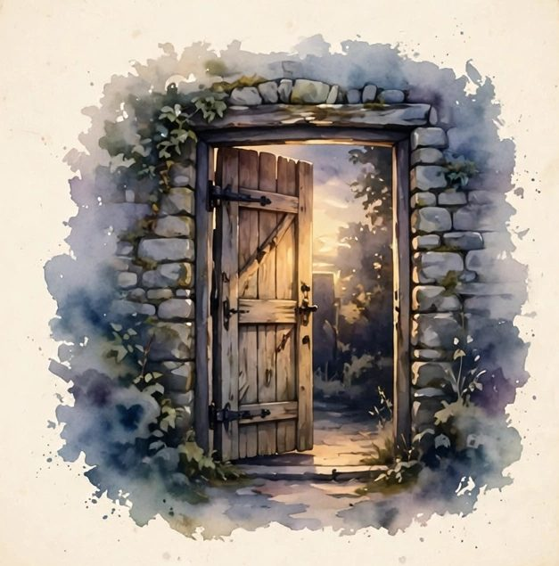
A wooden garden door stands in an old stone wall, slightly ajar, warm evening light spilling through the gap.
Nearly everyone keeps one. Behind the life that is lived — the work, the rooms, the names answered to — there runs another, quieter tenancy: the life secretly dreamed about. It is rarely announced and almost never itemized. It surfaces in small ways, in the pause before answering what one does, in the magazine kept rather than discarded, in the particular tenderness toward a certain street, a certain kind of morning. The house does not ask a visitor to produce it. It only notes that the door exists, and that most people, at some hour of the week, stand before it a moment.
The house is careful about what this dream is not. It is not evidence against the lived life, and it is not a debt the lived life owes. A person may love the actual rooms and still keep a lamp lit in an imagined one; the two facts do not quarrel unless someone insists on reading them as an accusation. The register treats the dreamed life as information — a record of wanting, kept the way weather is kept, as something true about the climate of a person, whether or not anything is ever built from it.
So the first hall of the house simply makes room. Here the secret life may be set down without being defended, priced, or apologized for. Nothing in these rooms promises that the dreamed life will be lived, or argues that it should be. The house keeps a narrower and more durable promise: that a dream can be looked at plainly, the way one looks at a garden behind a wall — not as a reproach to the garden one tends, but as a place that also, in its way, is kept.
2The House Behind the House
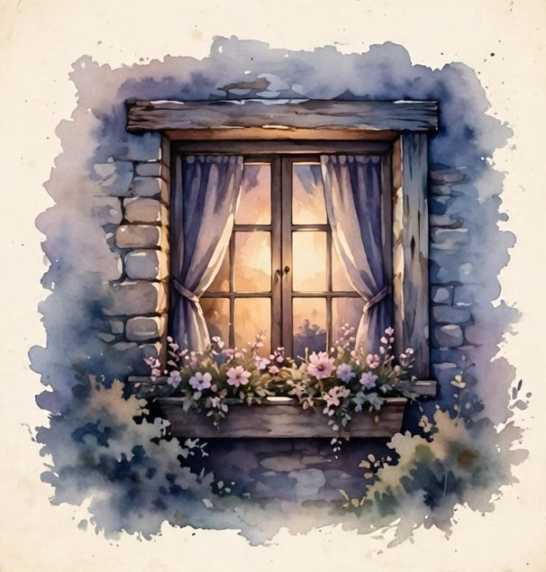
A cottage window glows amber at dusk, flower boxes below it and the curtains half drawn.
The image the house keeps for the secret life is architectural. Behind the house that faces the street — the address given out, the rooms visitors see — stands another house, smaller and less formally kept, reached by a door most guests never notice. It is not hidden out of shame. It is simply not part of the tour. Its windows are lit at hours when the front house is dark, and its furniture is arranged for one occupant only, who visits irregularly and never stays the night.
Every part of the arrangement is ordinary. The back house holds the career not taken, the city not moved to, the instrument unlearned, the quieter or wilder version of the same mornings. None of it is stored as contraband. The register lists it plainly, the way a good inventory lists the attic: things kept, things valued, things not currently in use. A house is not dishonest for having an attic. It is only a house that knows the difference between what it displays and what it keeps.
The Keeper's practice is to walk both houses without comparing their worth. The front house is not the true one and the back house the false; nor is the reverse the house's position, whatever romantics may claim at midnight. They are two addresses of one tenant. The Dream Desk keeps the keys to both on the same ring, and the register records visits to the quieter address without commentary, because a visit is not a defection. It is a person looking in on a room of their own.
3A Second Life, Unlived
It deserves its plain name: a second life, unlived. Not unlived the way a road is untraveled in a story told to children, with a moral waiting at the fork, but unlived the way most of any life is unlived — because a day holds only so many hours and a person can stand in only one place at a time. The arithmetic is not tragic. It is simply arithmetic. Every choice spends the same hours another choice would have spent differently.
The house resists the temptation to weigh the two lives against each other, because the weighing is rigged from the start. The lived life is known in full — its costs itemized, its Tuesdays included — while the unlived one is known only in its best light, edited by distance. Comparing them is comparing a house one has swept for twenty years with a photograph of a house. The register therefore declines the comparison and keeps both entries in the same hand, in the same ink.
What the unlived life offers, held this way, is company rather than competition. It walks alongside the lived one like a second shadow at a different hour — not a reproach, not a promise, just the shape of the other way the light could have fallen. Some visitors find, to their surprise, that naming it plainly loosens its grip rather than tightening it. A thing called by its right name takes up its right amount of room, and the room, in most houses, turns out to be manageable.
4The Keeper of the Unlived Life
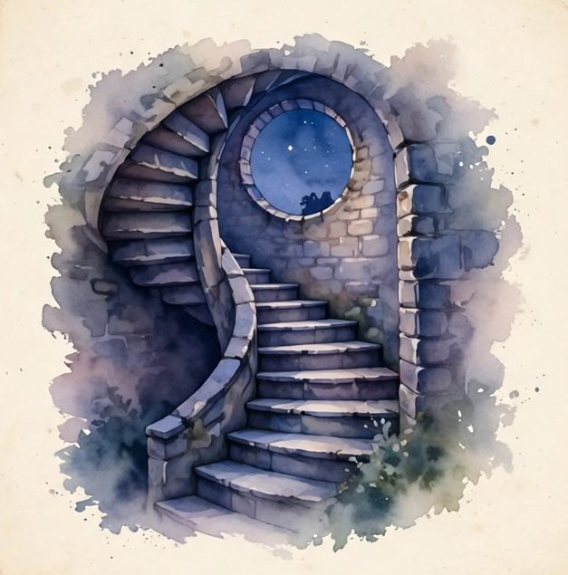
A narrow spiral staircase climbs to a small round window, deep blue twilight beyond the glass.
Every house of this kind keeps a keeper, and this one is the Keeper of the Unlived Life. The post is not an exalted one. The Keeper dusts the back rooms, airs them in spring, notes which windows were found open and which dreams have quietly stopped knocking. No dream is argued with at this desk. None is flattered, either. The Keeper's whole method is a steady, unembarrassed attention — the belief that a thing attended to calmly behaves differently from a thing locked away or a thing obeyed.
Visitors sometimes arrive expecting the Keeper to take a side: to urge them toward the dream or to talk them out of it, as though the desk were a court. It is not a court, and the Keeper issues no verdicts. The desk keeps records, not sentences. Asked what should be done about a secretly dreamed life, the Keeper is likely to ask, in return, what the dream has actually been requesting lately — an answer that is usually smaller, and kinder, than the question feared.
The register the Keeper keeps is the house's real treasure, and it is a plain one. Page after page records dreams in their seasons: the ones that arrived at twenty and left at forty, the one that returns every October, the small persistent one about a garden that has outlasted three careers. Nothing in the book is marked success or failure. The Keeper's conviction, entered on the first page, is that a life is large enough to contain its unlived lives without being diminished by them.
5Secret Is Not Ashamed
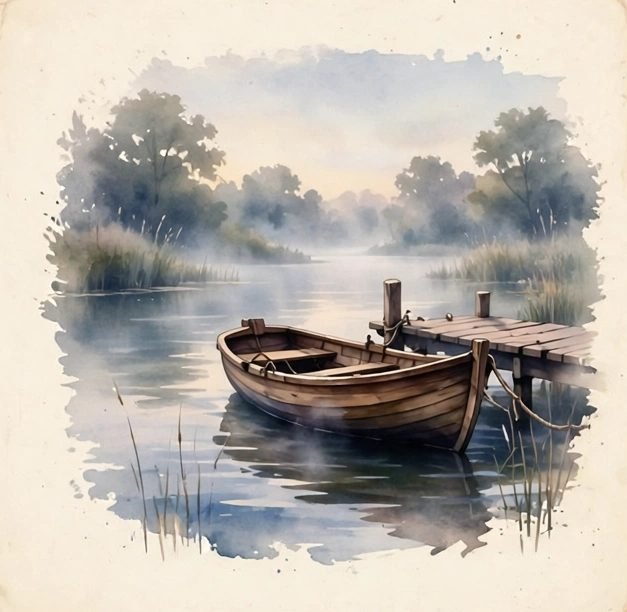
A small wooden rowboat rests tied to a quiet jetty at dawn, mist lying over still water.
The house draws one distinction early and holds it firmly: secret is not the same as ashamed. A thing may be kept private the way a garden is kept walled — not because it would disgrace the street, but because it grows better unobserved. The secretly dreamed life is, for most of its keepers, exactly this kind of privacy. It has simply never been issued to the general public of one's acquaintance, and it owes the public nothing.
Shame, where it appears, usually arrives from outside and late — from the suspicion that wanting another life means failing at this one, or that a contented person should have no further weather inside them. The register does not recognize the charge. Contentment and dreaming are not opposites; they coexist in most well-kept houses like a hearth and a window. A person may be grateful for the room they are in and still sometimes look out of it.
So the secret is kept the way the house keeps everything: without apology and without display. The Dream Desk does not require a confession as the price of admission, and it does not treat privacy as a problem awaiting a cure. Some dreams will one day be spoken aloud, and some will be carried quietly to the end, and the register records both arrangements in the same even hand. A secret kept kindly is a legitimate form of keeping.
6Everyone Keeps One
The house's least controversial finding is also its most comforting: everyone keeps one. The executive and the night porter, the grandmother and the graduate, the friend whose life looks from outside like a finished painting — all of them maintain, somewhere behind the ordinary door, a version of the days that went otherwise. The register has never admitted a visitor who did not, after an hour of honest looking, recognize some room of the back house as their own.
This is worth stating plainly because the secret life is so often experienced as a private defect, a sign that one's particular life was assembled wrong. The evidence of the house points the other way. The dreamed life appears to be standard equipment, issued with the imagination itself, as inseparable from a person as their handwriting. It varies in furnishings — a coast, a craft, a quieter name, a louder one — but the tenancy itself is universal.
There is a modest solidarity in this, and the house trades in it gently. To know that the composed colleague and the settled neighbor also keep a door they do not open for visitors is to stop reading one's own door as a scandal. The Dream Desk does not publish its findings or name its visitors. It simply lets each arrival understand, from the worn state of the threshold, how many have stood exactly where they are standing.
7The Dream Is Not a Lie
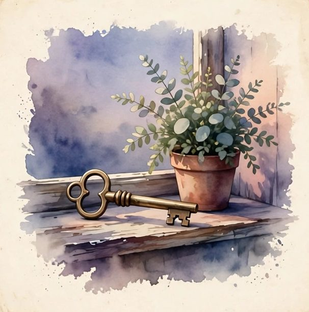
An old brass key lies on a windowsill beside a potted green plant in the evening light.
A charge is sometimes brought against the secret life, usually by the dreamer at a severe hour: that it is a lie — a story told to escape the truth of things. The house hears the charge and dismisses it on a technicality that matters. A lie is a statement made to deceive. The dreamed life deceives no one. The dreamer knows precisely which life is being lived; the rent, the calendar, and the mirror are all in honest working order. The dream is not a false report. It is a true one, about wanting.
What the dream reports is accurate even when its scenery is impossible. A person who dreams nightly of a lighthouse and has never kept one is not mistaken about the facts; they are correct about a hunger — for solitude, for a useful vigil, for a small clear duty at the edge of weather. The register reads dreams the way a careful reader reads any document: not for the literal itinerary, but for what the itinerary is carrying. The cargo is real even when the ship is imaginary.
Released from the charge of lying, the dream can be handled more usefully. It stops being evidence in a trial and becomes what it always was: correspondence from a part of the self that has no other postage. The Dream Desk files such letters without endorsing every request they contain, the way a good clerk files everything and signs nothing in haste. A dream is not a lie. It is a letter — to be read, considered, and answered at the pace of a life, not the pace of a longing.
8A Life in the Drawer
An attic dormer window holds a brass telescope turned toward the early stars.
Many secret lives are kept, quite literally, in a drawer. The drawer holds the evidence in its humblest form: the course catalog from a decade ago, the sketchbook with forty pages used, the photograph of a coastline, the language grammar with its spine uncracked past chapter three. Outsiders, finding such a drawer, sometimes read it as a museum of failures. The house reads it differently. A drawer is not a grave. It is a place where things are kept within reach and out of the weather.
There is a particular tenderness in how such drawers are maintained. The catalog is not thrown out at each cleaning; the sketchbook migrates from house to house across moves that discard far grander furniture. The register notes this without sentimentality: what survives every purge is data. A person may not know what to do with the dreamed life, may never know, and still keep making room for its papers. The keeping itself is a position, and not a foolish one.
The Keeper's only counsel about drawers is that they be opened occasionally and without ceremony. A drawer never opened becomes a rumor, and rumors grow grander and sadder than their contents. Opened on an ordinary afternoon, the drawer is just a drawer: some paper, some longing, nothing that requires a decision before dinner. The house recommends this ordinariness. The secret life, handled plainly and at intervals, stays the size of a drawer — which is to say, a size a life can hold.
9The Quiet Tenancy
The arrangement, the house suggests, is best understood as a tenancy. The dreamed life rents a small room in the house of the lived one. It pays no money, but it pays in its own currency: a certain alertness, a refusal to let the days become entirely flat, a standing reminder that the tenant of the main house contains more than the main house uses. Good tenancies are quiet ones. The dream does not bang on the pipes at all hours; the lived life does not pretend the room is empty.
Like all tenancies, this one works best with terms understood. The dream may be visited, furnished in the mind, redecorated across the years. It may not evict the current life on an impulse, and the current life may not deny it exists when guests ask about the house. These terms sound simple and are, in practice, a whole ethics. Most of the misery around secret dreams comes not from the dream itself but from tenancies with no terms at all — the dream treated as a squatter, or as the rightful owner.
The register keeps the lease in a plain folder and reviews it rarely. In well-kept houses the tenancy runs for decades without incident, and both parties age with a kind of mutual regard. The dreamed life grows less gaudy and more specific; the lived life grows less defensive. Some evenings the door between them stands open and nothing dramatic happens at all, which the Keeper counts among the house's best outcomes. Quiet, after all, was the terms' whole point.
10Not an Escape, a Compass
A lighthouse stands on a small rocky island at twilight, its lamp lit above a calm sea.
The secretly dreamed life is often accused of being an escape hatch — a way out of the real, used by people unwilling to face their days. The house has examined the charge across many registers and finds it mostly wrong. An escape is used to leave. What the house observes, far more often, is the dream being used to orient: consulted the way a compass is consulted, not to flee the terrain but to know, standing in it, which way the longing points.
A compass does not move anyone. It reports a direction, and the traveler remains entirely responsible for the walking, the weather, and the decision of whether the destination is even reachable on foot. So with the dream. The life dreamed of the sea may never hold a coastline, and still the needle's report is usable information: something in the present arrangement is short of horizon, of salt, of mornings that begin with weather. Small corrections are made on smaller evidence than that every day.
The Dream Desk therefore keeps the dream oiled and readable rather than locked away as a temptation. A compass hidden in a drawer for fear of what it might suggest helps no one; a compass consulted calmly, its readings noted and sometimes respectfully not followed, is an instrument of navigation. The house's position is only this: the dreamed life tells the truth about direction. What a person does with a true direction remains, properly, their own affair.
11The Dream at Rest
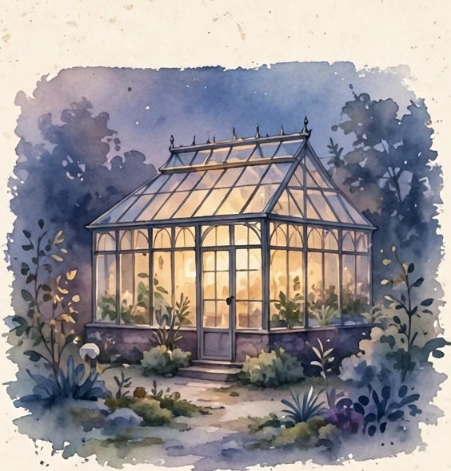
A glass greenhouse glows softly from inside, standing alone in a dusky garden.
Not every season is a season for visiting the back house. There are years — the years of small children, of illness, of building or burying — when the dreamed life is neither pursued nor consulted, and the house wishes it recorded that this, too, is a correct arrangement. A dream at rest is not a dream abandoned. Seeds are not failing while they are underground; they are doing the part of their work that looks like nothing.
The register keeps a column for dormancy and fills it without anxiety. Against many names, for long stretches, there is simply: resting. The Keeper does not knock. Experience has shown that dreams keep remarkably well — better than resolutions, better than grievances. The coastline waited through twenty years of inland postings and was still a coastline when finally visited. The craft waited in its drawer through a whole career and lost nothing but the illusion that it had to be mastered young.
The house offers this hall, then, as permission of a specific kind: permission to let the dream rest without writing its obituary. Visitors who arrive guilty about neglect are shown the register's long, calm columns and reminded that the Dream Desk has never once marked a dream as expired. What is genuinely one's own keeps. The door will be there in the season when there is time to stand before it again, and the light behind it, the Keeper notes, does not bill by the hour.
12The First Rule of the Secret Life
The first hall ends with the house's first rule, from which all the others descend. The rule is short enough to be painted over the Dream Desk, and in the Keeper's hand it reads: the dream is not a verdict. It does not convict the lived life of inadequacy, and the lived life does not convict the dream of foolishness. Both are admitted as evidence of a person; neither is admitted as the judge of the other.
Nearly every sorrow the register records about secret lives can be traced to a breach of this rule. The dream promoted to judge returns a sentence of failure against perfectly decent days. The lived life promoted to judge returns a sentence of ridicule against a perfectly decent longing. In both cases a piece of information was mistaken for a court, and someone went home sentenced by their own paperwork. The house exists largely to reverse such sentences on appeal.
Held under the rule, the whole subject changes temperature. The dreamed life becomes something a person can be curious about rather than defended against; the lived life becomes something that can be examined without flinching. The halls ahead of this one take the rule room by room — where the dream hides, what it contains, what it asks, what it costs. None of it requires alarm. The Keeper asks only that visitors carry the rule with them, the way one carries a handrail: lightly, and the whole way down.
13Where a Dream Hides
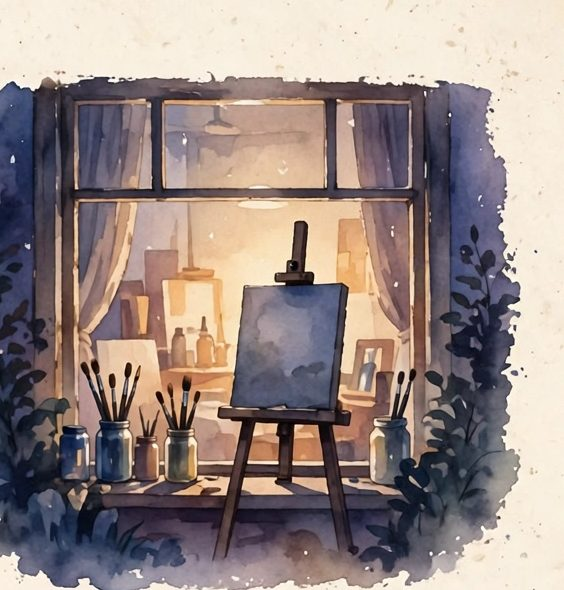
A painter's studio window at dusk shows an easel's silhouette and jars of brushes in warm light.
The second hall of the house concerns itself with location. A secretly dreamed life is seldom kept in the open plan of the mind; it hides, and it hides in characteristic places, the way water finds the same low corners of a garden. The register has mapped the hiding places across many years of admissions, and the map is offered here without surprise: the dream is wherever the attention goes when it is not being supervised.
It hides in the margins of the day and in the last minutes before sleep. It hides in other people's photographs and in the lit windows of houses passed at dusk. It hides in the career not taken, the city not moved to, the skill admired in others with a precision that betrays long study. None of these locations is accidental. A hiding place is chosen the way a cat chooses a chair — by fit, by warmth, by the angle of the light.
The house does not propose dragging the dream out of its hiding places; that would be both unkind and unnecessary, since the dream is not contraband. The map is drawn for a simpler reason. A person who knows where their dream hides can visit it deliberately instead of stumbling on it ambushed — can choose the hour and the terms of the meeting. The halls that follow walk the map corner by corner, in the Keeper's unhurried order, beginning with the margins of the day.
14In the Margins of the Day
A small train crosses a stone viaduct beneath a violet evening sky.
The day has margins the way a page does: the minutes in the stairwell, the queue, the red light, the held breath while a kettle comes to the boil. The official text of a life runs down the center of the page in a firm hand, but the margins fill with a different script — smaller, lighter, entirely one's own. That is where the Dream Desk finds most secret lives in their working hours, annotated into the edges of days that officially contain no time for them.
The margin-dream has a recognizable style. It is brief and vivid: a whole imagined morning on a boat compressed into the length of an elevator ride; a vineyard visited entirely between the station and the office door. The brevity is not a deficiency. Marginalia are not failed chapters; they are a different literary form, suited to a life that is genuinely occupied. The register collects them with respect, the way an archivist respects a note in a margin that outshines the text.
The house suggests only that the margins be acknowledged as real estate. A person whose dream lives in the day's edges is not a person without a dream life; they are a person whose dream life has adapted, intelligently, to the available light. Many a back house began as margin notes. Some remain marginal for a lifetime and lose nothing by it. The margin, the Keeper observes, is also where readers write the truest things — in pencil, unguarded, for an audience of one.
15Behind the Ordinary Door
In the houses the register knows best, the dreamed life is not kept in any exotic location. It is behind the most ordinary door in the building — the one passed twenty times a day without remark, indistinguishable from the doors to the linen cupboard and the stairs. This plainness is itself a kind of wisdom. The dream does not need a vault. It needs only a door that is not usually opened in company.
There is a moment, familiar to most keepers of such doors, when a hand rests on the handle without turning it — in the middle of an ordinary afternoon, between one task and the next — and the whole other life is present for the length of a breath. Nothing happens. The afternoon continues. The house counts these moments among the most frequent transactions in its register and among the least understood by outsiders, who imagine the secret life must announce itself with thunder. Mostly it uses the ordinary door, at ordinary hours, quietly.
The Dream Desk advises against dramatizing the door in either direction — neither picking its lock in a midnight crisis nor painting it over and pretending the wall is blank. A door known and used calmly serves a household well for decades. The Keeper's own rounds pass this one nightly, and the entry, most nights, is a single line: still there, still shut, still mine. The register has never required more of the ordinary door than that.
The Dream Desk
One desk receives all correspondence for this house — questions, corrections, and word of any life a visitor secretly dreams about: where it hides, its detail, its price, its small version. It is read in the order it arrives, and in confidence.
16In the Last Minutes Before Sleep
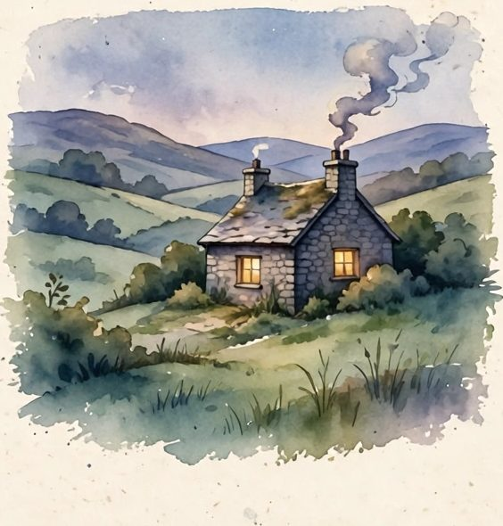
A stone cottage sits in green hills, chimney smoke rising, one window lit.
The most faithful of the dream's hiding places requires no map at all: it is the last minutes before sleep, when the day's management relaxes its hold and the mind, unbriefed, goes where it goes. For a great many people the secretly dreamed life is simply the place the thoughts settle once the ceiling has been stared at long enough — a cottage, a coastline, a workshop, a slower name. The register calls this the night tenancy, and it is the oldest lease in the house.
There is a reason the dream keeps these hours. Sleep's antechamber is the one room where the dream is never cross-examined. No one asks the half-dreamed cottage for its mortgage figures; no one requires the imagined workshop to justify its accounts. In the last minutes, the dreamed life is allowed to be pure place — weather, light, and arrangement — with its economics mercifully suspended. It performs, there, an old service: it gives the mind somewhere kind to go while the body powers down.
The house treats the night tenancy gently and advises its visitors to do the same. What is visited in those minutes need not be audited in the morning or promoted into a plan by Friday. Some dreams do their entire work in the dark, as ballast, and ask for nothing in daylight at all. The Keeper enters them in the register without follow-up, the way one notes rain in the night: it came, it did its quiet work, the garden is different for it.
17In Other People's Photographs
A quiet harbor holds small sailboats at anchor under a large pale moon.
A reliable place to find one's secret life is in the photographs of strangers. Not the famous images, which belong to everyone, but the ordinary ones: a friend's holiday rental with its blue shutters, a colleague's allotment in the background of a barbecue picture, a harbor town in a magazine at the dentist. The attention lingers half a second too long, and the register, watching, makes its note. Envy is too crude a word for the feeling. It is recognition wearing a borrowed coat.
The photograph works because it is conveniently deniable. One is only looking at a picture. Yet the details that hold the eye are never random — it is the shutters, the allotment, the harbor, never the smiling group in front of them. The Dream Desk teaches its visitors to read their own lingering the way a tracker reads prints: not as evidence of discontent with the life in the frame of one's own camera, but as a surveyor's mark, showing precisely where the back house's garden would run.
There is no obligation attached to the discovery. A photograph admired is not a promise made, and the house keeps a strict rule against converting every recognition into a project. Sometimes the mark is simply recorded — so that is where it would be — and the magazine is set down, and lunch is made. The register's satisfaction is in the accuracy of the map, not in the speed of the journey. Knowing the address of the dreamed life is already a way of living less estranged from it.
18In the Window of a Passing Train
Every railway keeps a gallery that no museum can acquire: the lit windows of houses passed at dusk, each one visible for three seconds and complete. A kitchen, a staircase, a room with a lamp and a chair arranged for reading. The secretly dreamed life is an enthusiastic collector of these views. It does not want the houses, exactly. It wants the three seconds — the sensation of a whole other arrangement of days, glimpsed entire, with none of its costs attached.
The train window is an honest teacher about the dream's true appetite. What the passenger loves in the passing window is not property but possibility — the proof, renewed at every mile, that lives are arranged in more ways than the one currently being sat in. The register notes that the pleasure survives the obvious knowledge that the lit room contains its own bills and sorrows. The dream was never fooled. It was only visiting the idea of elsewhere, at speed, from a warm seat.
The house does not mock this form of travel, which costs a ticket and returns a disproportionate amount of inner weather. Some visitors do their best dreaming at forty miles an hour, watching other evenings through other glass, and arrive home oddly restored to their own. The Dream Desk records the journey as a legitimate visit to the back house — by the scenic route, with the windows lit, exactly as the tenant prefers.
19In the Houses Passed at Dusk
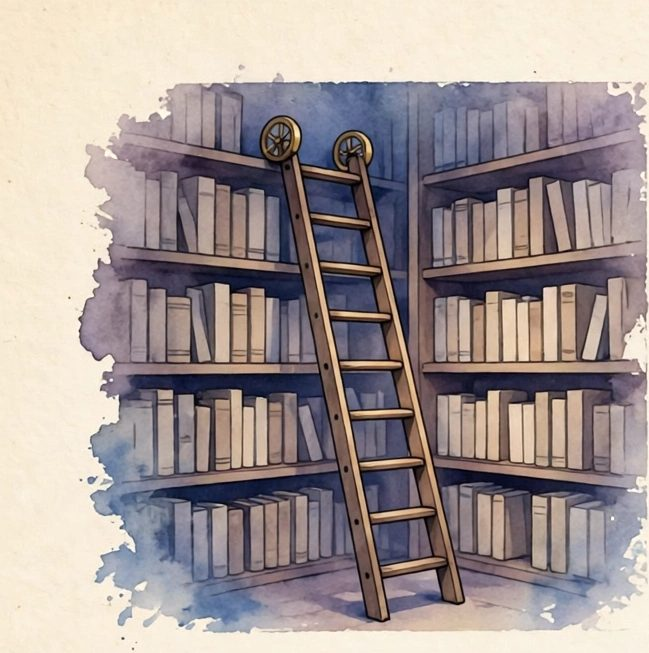
A tall wooden library ladder leans against high shelves of plain, blank books.
Closely related to the train window, and older, is the walk at dusk past houses as their lamps come on. Every neighborhood keeps this exhibition nightly and charges nothing. The walker slows — everyone slows — at the houses whose windows suggest the dreamed arrangement: the long kitchen, the bookshelves, the garden room with its green glass. The register has a phrase for the feeling these windows produce: a homesickness for a house one has never lived in.
The honesty of the house requires noting what the dusk conceals. Behind each lit window the actual tenants are negotiating the actual terms — the leaking tap, the difficult letter, the ordinary fatigue. The walker knows this, the way the train passenger knows it, and the knowledge does not spoil the glow. The dream is not shopping for a trouble-free life; no such exhibit exists. It is studying arrangements, the way an architect studies other people's buildings — for the one detail worth carrying home.
And details are carried home, constantly, in small unrecorded acts of smuggling: a lamp moved to a corner because of a window seen in another street, a shelf built, a meal slowed down. This is the dusk walk's real commerce with the lived life, and the Dream Desk approves of it entirely. The unlived life, mined gently for parts, furnishes the lived one for years — and asks, in return, only to be walked past at the right hour, and regarded without bitterness.
20In the Career Not Taken
A small mountain cabin stands in snow, a single warm window lit at blue dusk.
For many visitors, the back house is furnished almost entirely by one large piece: the career not taken. It stands in the register under many names — the stage, the ships, the laboratory, the cloth, the bench — but its shape is constant: the work that was seriously possible once, and then was not chosen, or was chosen against by circumstance wearing the mask of advice. Around this centerpiece the dreamed life arranges its smaller furniture almost by itself.
The house insists on a precise accounting here, because this room attracts more mythology than any other. The career not taken is remembered in its Sunday clothes. Its Tuesdays — the audits, the failures, the particular exhaustion of that work — were never lived and so never registered. The dream keeps the overture and skips the opera's long middle. The Keeper does not correct the record out of spite; the correction is simply entered, so that any weighing of lives uses both sets of books.
What remains, after the mythology is taxed, is usually something real and portable: not the career, but the thing in it that was loved — the making, the voyages, the exactness, the audiences. The register's experience is that this essence travels well. It has been carried, by late and ingenious tenants, into second acts, side rooms, and retirement workshops of every description. The career not taken may keep its room in the back house. Its best furniture, the Dream Desk notes, is frequently on loan to the front.
21In the City Never Moved To
There is a city, in most registers, that was never moved to. It was visited once, or nearly chosen, or chosen and then unchosen by a signature on a different lease, and it has gone on existing in the mind with its weather intact. The dreamed life keeps a pied-à-terre there. Its streets are known better than some streets actually lived on, and its light — the register notes this detail often — is always the light of the season when it was first seen.
The city never moved to performs a service no lived-in city can: it stays the size of a possibility. Because no ordinary years were spent there, it holds no grudges and no routines; it is all arrival, forever. The house does not begrudge the arrangement. Every life, the Keeper believes, is entitled to one elsewhere kept in perfect condition, the way a ship keeps a home port it may not see for years. The entitlement is not a plan. It is a mooring.
Visitors sometimes ask whether the city should finally be visited, or lived in for a season, or struck from the register as a youthful entry. The Dream Desk declines to rule. Some such cities survive contact with reality beautifully; some are better kept at the distance that preserves them, and the tenant usually knows which kind they hold. Either way, the city has already done years of quiet work simply by existing on the map — a proof, renewed at every glance, that the world remained larger than the portion of it one happened to settle.
22In the Skill Never Learned
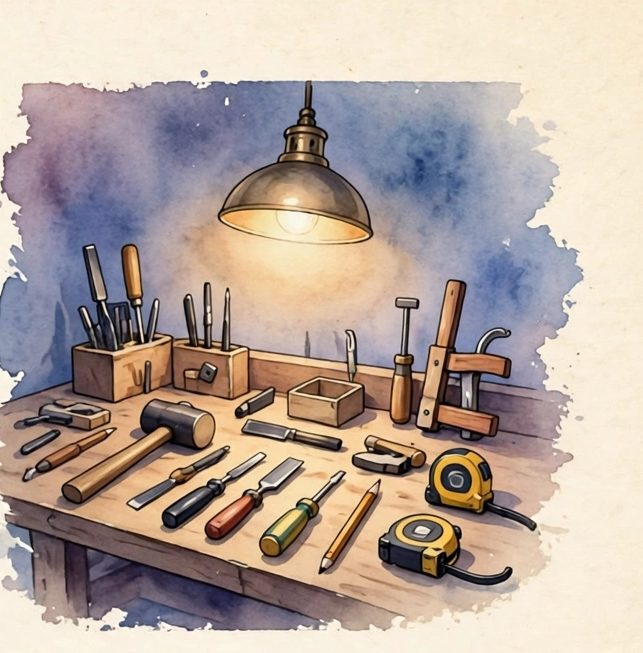
A craftsman's workbench holds hand tools laid out in order beneath a hanging lamp.
The back house often contains a workshop, and in it, laid out with unreasonable care, the tools of the skill never learned: the instrument never practiced past the difficult third month, the joinery, the language, the rigging of small boats. The dreamed life is fluent in all of them. It plays, builds, and converses in the imagined tense, perfectly, the way one is always fluent in dreams. The register keeps this room swept and its lamp trimmed, because nearly every visitor asks to see it.
The house is gentle about the reasons such skills go unlearned, because the reasons are usually not laziness. They are arithmetic: the hours were spent, honorably, on the skills the lived life actually required. Something is always not learned; the only choice ever offered is which thing. The register refuses to let a full life be described as the absence of a skill, as though a person were a syllabus with gaps. The unlearned skill is an entry, not an indictment.
And the workshop has one more use, which the Dream Desk commends to every visitor: its door is not locked. Of all the rooms in the back house, this is the one most often annexed, late and partially and gladly, by the front. The skill learned badly at fifty, in evening installments, turns out to be the same skill — the perfection was the dream's embroidery; the pleasure was the actual request. The register files such annexations without triumph. The tenant simply has one more room with the light on.
23In the Version Never Announced
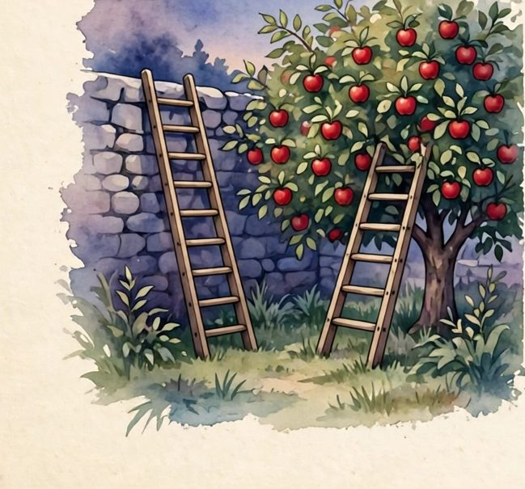
A walled orchard, and a wooden ladder leaning against an apple tree.
Some secret lives hide in plain speech — or rather, just behind it. There is a version of the life that was never announced: the plan that was fully formed one spring and never spoken at the table, the application imagined down to its final signature and never sent, the sentence that begins with one day I might, and has been finished, silently, a hundred ways. The register calls these the unannounced versions, and keeps them in a folder of their own.
An unannounced version is not necessarily a suppressed one. Announcement is a social act with social consequences; it recruits other people's hopes, worries, and timetables into what was, until then, a private arrangement between a person and their own future. Many tenants keep a version unannounced the way a gardener keeps a bed unplanted until the frosts are past — not from fear of the weather, but from respect for the seed's timing, which is not the calendar's business.
The house's interest in this folder is protective. In a world that treats every intention as a press release, the Dream Desk maintains that a person is allowed to hold a fully imagined life in complete privacy, for years, without the holding being a failure of nerve. Some versions are announced in their season. Some are never announced and still do their work, quietly restructuring what the tenant notices, saves, and declines. The register records the version. The announcement, or its absence, is the tenant's own entry to make.
24Found, Not Confessed
The second hall closes with a matter of method. The house finds dreams; it does not extract confessions. The distinction governs everything at the Dream Desk, because a dream treated as a confession — as something admitted under pressure, to be judged and sentenced — goes back into hiding at once, deeper and better defended. A dream treated as a find, a thing turned up in the course of ordinary looking, can be examined in daylight by its own keeper.
This is why the register's questions are a surveyor's, not an interrogator's. Not: why have you hidden this. But: where does it keep its things; when does it visit; what does it seem to want this year. The answers, given in that spirit, are remarkably reliable. People know their secret lives well; it is the courtroom atmosphere that makes them poor witnesses. Remove the oath and the bench, and the testimony improves beyond recognition.
Found, then, is the house's word, and confessed is struck from its forms. A visitor leaving this hall carries no admission and owes no account. They carry a map slightly better drawn than the one they arrived with — which was the entire purpose of the visit. The halls ahead turn from location to contents: the dream in detail, room by room, exactly as it has furnished itself over the years of being dreamed.
25The Dream in Detail
A narrow canal boat with flower pots along its roof lies moored on still evening water.
The third hall opens the back house's door and looks, at last, at the furniture. The secretly dreamed life, examined closely, is never a vague glow. It is specific to a degree that can startle its own keeper: a particular house, a named coast, an exact quality of morning light, the work laid out on a particular bench. Dreams that survive decades do so on detail. The register's whole third hall is an argument that the details deserve attention, because the details are where the information lives.
Vagueness, the Keeper has found, is usually a disguise — put on by dreams that are really two or three dreams sharing a coat. Detailed looking separates them. The wish for the cottage may resolve, under survey, into a wish for mornings unowned by anyone's timetable, which is a different wish with a different geography. Only the detail tells. A dream examined closely enough stops being a single shining object and becomes a household inventory — less romantic, far more useful.
The house therefore proceeds slowly through the rooms: the house in the dream, the work, the mornings, the weather, the people. Nothing here is a recommendation. A person may inventory the back house the way an executor inventories an estate — to know what is there, in what condition, and what it might be worth to whom. The Dream Desk provides the lamp, the notebook, and the unhurried afternoon. The inventory itself belongs, as everything here belongs, to the tenant.
26The House in the Dream
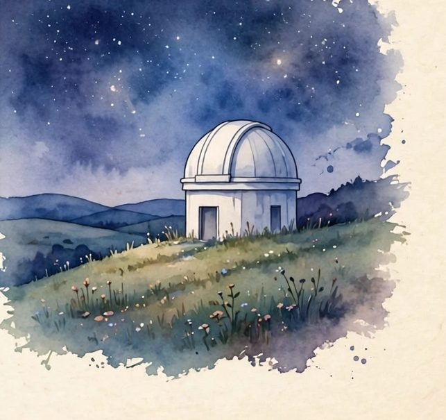
A small white observatory dome rests on a grassy hill under a starry indigo sky.
Almost every dreamed life has a house at its center, and the house is always known precisely. Not approximately — precisely: the turn of the stair, the window the light enters first, the room kept for work and the room kept for weather-watching. The register can fill pages from a single visitor's description, given without notes after twenty years of not mentioning it. The mind, it turns out, is an exact architect when no budget committee is sitting.
Read carefully, the house in the dream is a document about the lived one. Its emphases are exact: the dreamed house is large where the lived house feels small, quiet where the lived one is loud, solitary or sociable in precise compensation. But compensation is not criticism. A person who dreams of a tower room is not issuing a verdict on their kitchen; they are recording a preference the kitchen was never designed to satisfy. The register files the drawing without attaching it to a complaint.
It is also worth noting how modest most dreamed houses are. Given unlimited imagined funds, the tenants of the register overwhelmingly build small: a cottage, a cabin, a boat, a single good room over a harbor. The dream's extravagance is rarely size. It is fit — a place shaped exactly to one life, with no rooms maintained for show. The Keeper finds this one of the register's most reliable findings: what people secretly want is seldom more. It is theirs, fitted, and quiet.
27The Work in the Dream
The dreamed life has work in it — this surprises visitors who expected the back house to be furnished with leisure. In the register's pages the other life is almost never idle. It keeps bees, or a lighthouse, or a small press; it crosses oceans in working boats; it mends, grows, teaches, builds. The hands in the dreamed life are busy in a specific way, and the specificity is the finding: the dream is rarely about stopping work. It is about work of a different obedience.
The difference, examined across many entries, comes down to whose clock the work keeps and who can see its results. Dreamed work tends to be whole — made from beginning to end by the same hands — and its products tend to stay visible: a wall built, a harvest in, a table delivered. The lived work of many visitors is, by contrast, fractional and evaporating, done in meetings and messages. The register does not call one real and the other false. It simply notes what the dream keeps ordering from the catalog: completion, and weather.
A finding of this kind is allowed to remain a finding. It does not have to become a resignation letter by Friday. Tenants have answered it with a garden, a bench in a garage, a Saturday given to making one whole thing — small annexations the house records approvingly elsewhere. The work in the dream, the Dream Desk believes, is best read as a specification: not of a different life, necessarily, but of an ingredient the present one is short of. Ingredients can be sourced at many scales.
28The Mornings There
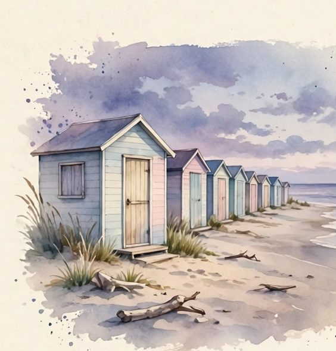
A small pastel beach hut stands in a quiet row of huts at evening.
If the register were forced to choose one detail as the dream's true center of gravity, it would choose the mornings. Ask a keeper of a secret life to describe the other life, and the description almost always begins at dawn: the light, the first sound, the order of unhurried operations — kettle, shore, bench, page. The dreamed life is not, at its core, a different set of possessions or even a different address. It is a different beginning of the day, repeated.
This makes a certain sense. Morning is where a life declares its terms. Whoever owns the first hour owns the day in draft, and most lived mornings are owned — by commutes, obligations, other people's emergencies arriving by phone. The dreamed morning is sovereign. Nothing in it is urgent; its tasks are chosen the night before by the same person who performs them. The register notes that the sovereignty, not the scenery, is what visitors describe with the most longing in their voices.
The house draws from this a small and practical comfort, offered without insistence: of all the dream's furnishings, the morning is the most portable. A first hour defended in the present life — earlier, quieter, unplugged, spent as the back house spends it — is not a consolation for the unlived life. It is a genuine transfer of its best asset. Many tenants, the Keeper records, have quietly re-furnished their actual dawns from the dream's inventory, and the register counts those mornings among the back house's most successful exports.
29The People in the Dream
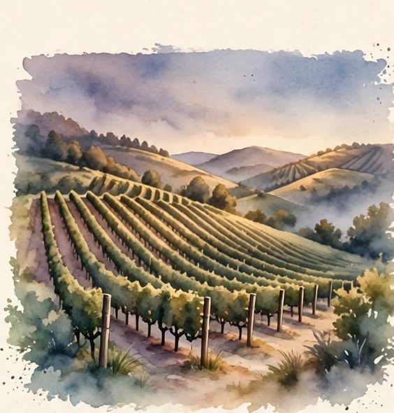
Neat rows of a vineyard climb a hillside in golden dusk light.
The dreamed life is populated, though rarely crowded. Its cast list, examined in the register, divides into three companies: people carried over from the lived life, appearing in easier roles; people invented outright, who exist nowhere else; and — the entry that always gives visitors pause — people from the past, restored to the company they kept before the parting of the ways. The Dream Desk records the cast without commentary. Dreams cast the way memory casts: by need, not by current address.
It is worth noticing who is absent. The dreamed life seldom includes the audiences of the lived one — the colleagues to impress, the rivals, the generalized public whose opinion is so often consulted at such cost. In the back house, the company is small and the reviews are not collected. This absence is one of the dream's most consistent features, and one of its most instructive. A life imagined without an audience is a life imagined for its own sake, possibly for the first time.
The house offers one gentle caution about the cast: the people in the dream are not owed an explanation, an invitation, or a casting notice in the real. They are figures in an inner arrangement, and their real counterparts remain free citizens of the actual life, innocent of the roles the dream assigns them. Kept in that spirit, the dreamed company does no harm and some good — it rehearses the tenant in a world arranged for affection rather than assessment, and sends them back to the real table, often, a little gentler.
30The Weather of That Life
Every dreamed life has a climate, and its keeper can describe it as exactly as its house. For some it is perpetual early autumn in a northern country, all slant light and woodsmoke. For others, a dry bright coast; for others still, deep snow and the silence that attends it, or the green pressure of rain arriving most afternoons. The weather is never incidental decoration. Ask after it directly, the register advises, and the dream will often confess, through its climate, what it was actually about.
Weather is the dream's shorthand for a tempo. The snowy life wants slowness and muffling, a world that grants permission to stay in. The coastal life wants clarity and a horizon that behaves like a promise kept daily. The rainy life wants growth and green enclosure; the desert life, spareness and stars. None of these are really requests for meteorology. They are requests for a pace of days — and pace, unlike latitude, can sometimes be adjusted without moving house.
The Dream Desk keeps a barometer in the hall for a reason. Tenants who learn to read their dream's weather stop arguing with its geography. The life dreamed in the wrong country may be entirely satisfiable at home, once its true request — slowness, horizon, enclosure, stars — is translated out of climate into conduct. Not always; the register is honest about the cases where only the place will do. But often enough that the weather question is now standard at the desk: before asking where the dream lives, ask what season it keeps.
The Dream Desk
One desk receives all correspondence for this house — questions, corrections, and word of any life a visitor secretly dreams about: where it hides, its detail, its price, its small version. It is read in the order it arrives, and in confidence.
31The Hands Know Other Trades
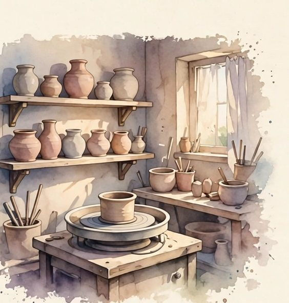
A pottery wheel waits in the corner of a sunlit workshop, clay pots along a shelf.
There is a knowledge the body keeps that the biography omits. Watch a keeper of a secret life pass a workshop, a boatyard, a bakery at dawn, and the hands — not the eyes, the hands — will register a small, specific grief, as if they had been promised this work once and the appointment was cancelled by someone else. The register takes this seriously. The dreamed life is often stored in the hands, which learned its outline early and never received the memo that the plan had changed.
In the dreamed life, those hands are competent. They throw pots, splice rope, dress stone, tune engines, knead and plane and solder with the unthinking fluency that only practice — or imagination rehearsing practice for thirty years — can give. The gap between the hands' imagined competence and their actual one is not a fraud. It is a measure of how thoroughly the dream was furnished. A life dreamed in that much detail was not a whim. It was a residence, maintained.
The house's counsel on this point is practical enough to fit on a card: the hands can be consulted directly. They do not ask for the whole trade, the new career, the dramatic apprenticeship. They ask for material — clay, wood, dough, rope — and an hour. Of all the dream's ambassadors to the lived life, the hands are the most easily satisfied and the most honest in their reports. What they make, badly at first and then less badly, the register files under the dream's most persuasive evidence: proof that the other life was never only other.
32The Language Spoken There
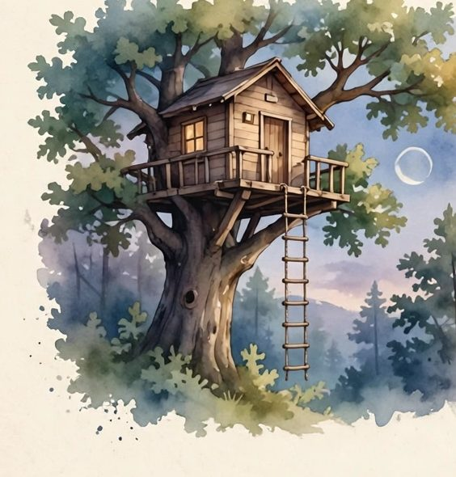
A treehouse sits high in a large oak, a rope ladder hanging down from its door.
Many dreamed lives are conducted in another language. The tenant who never moved to the far city nonetheless dreams in its tongue, or half-dreams, the way one does — fluently where the lived self is halting, at home in markets and jokes the waking student of the language has never reached. The register records this without surprise. The imagination is a shameless polyglot; it acquires in a night what the classroom takes years to approach, and it pays no fees.
The language in the dream is rarely there for its vocabulary. It stands for a whole register of the self that the mother tongue has no chair for — the self who is funnier in it, or graver, or younger, or unembarrassed in ways the home language, with all its witnesses, forbids. People do not only dream of other places. They dream of other mouths to be themselves with. The Dream Desk considers this one of the back house's most human arrangements, and files it without a trace of mockery.
For the tenant who wishes to visit more deliberately, the dreamed language has one advantage over every other room in the back house: its door opens from the front hall. An hour with the grammar, a film without subtitles, a song learned properly — these are small keys, but the lock is real, and the register records, year after year, the particular pleasure of tenants who find a few true sentences waiting where the dream said they would be. The fluency was embroidery. The sentences are not.
33The Garden Behind the Wall
If the house had to choose a single emblem for the secretly dreamed life, it would choose the walled garden. Not the show garden at the front, planted for the street, but the one behind the house, behind a wall with one door in it, where things are grown for no audience: the ambitious roses, the experimental beds, the tree planted for a harvest the planter may be too old to eat standing up. Every tenant understands the emblem at once, because every tenant keeps something in that arrangement.
A wall, the register insists, is not a prison for a garden. It is what makes the garden possible — shelter from the wind of other people's opinions, from the trampling of casual visitors, from the requirement that everything grown justify itself in public. Inside the wall, a thing may be grown badly, slowly, and purely for the growing. Most dreamed lives ask for exactly this and nothing grander: one enclosure where the standards are the gardener's own.
The Keeper walks the wall on evening rounds and reports its condition as a matter of routine. Walls want maintenance like anything else — a door kept swinging, a bench kept clear, the path kept passable for the visits that matter. A garden behind a wall, entirely unvisited, does eventually become a rumor of a garden. But a wall with a working door, and a tenant who goes through it some evenings with no agenda at all — that, the house maintains, is not a failure of openness. It is one of the soundest structures a life can contain.
34The Sea, or the Mountains
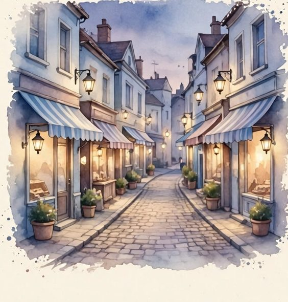
A narrow street of small shops wears striped awnings, the lamps just lit at dusk.
Sooner or later, every register interview arrives at the old fork: the sea, or the mountains. The dreamed life, it turns out, has a continental divide running through it, and tenants sort themselves along it with surprising certainty. The sea people want a horizon that moves and a working relationship with weather. The mountain people want altitude, enclosure, and the moral clarity of a path that goes up. The Dream Desk has stopped treating this as a question about holidays. It is a question about the shape of consolation.
Each landscape makes its own promise, and the promises are opposites in an instructive way. The sea promises that everything passes — tides, storms, griefs — and that the shore self will be washed and returned. The mountains promise that some things stay: that effort accumulates, that the view is earned in a currency that does not inflate. A tenant's choice between them, the register finds, usually reports which promise the lived life has been shorter of. The geography is a confession in code.
The house keeps both landscapes in stock, in plates and in the back garden's two prospects, and declines to rank them. It notes only that the fork is real and worth knowing about oneself — because a person who understands which promise they are thirsty for can sometimes find a local well: a great lake for the sea person marooned inland, a serious hill for the mountain person in flat country. The dream's geography is grand. Its underlying request, like most of the dream's requests, travels surprisingly well.
35The Ordinary Tuesday There
A single distant hot air balloon drifts over quiet patchwork fields at dawn.
The true test of a dreamed life is not its holidays. It is its Tuesdays. Any imagination can furnish a celebration; the register's more searching question is what an ordinary Tuesday looks like in the back house — the unremarkable middle of an unremarkable week, with errands in it. Tenants who can describe that Tuesday in detail hold a well-surveyed dream. Those whose dream dissolves after the arrival scene hold something else: not a life, but a doorway, still worth keeping, but differently.
The Tuesday test is revealing in both directions. Sometimes the imagined ordinary day is so attractive — its work, its pace, its evening — that the register simply records a strong, specific longing and nothing amiss whatsoever. And sometimes the tenant discovers, mid-description, that they cannot bear to furnish the Tuesday at all: that what they wanted was never the other life, only a rest from this one. That discovery is not a disappointment. It is one of the most valuable entries the Dream Desk ever makes, because a rest and a life are arranged for very differently.
Where the Tuesday is vivid, its details are the dream's most exportable goods. The slow breakfast there, the walk to the work there, the lamp lit at a certain hour there — these are not fantasies, they are specifications, and specifications can be quoted for in any currency of life. The house has watched Tuesdays migrate from the back house to the front one item at a time for years. The dreamed life, examined at its most ordinary, turns out to be a surprisingly practical document.
36Detail Is How It Stays Alive
The third hall closes with the Keeper's working principle, painted nowhere but practiced everywhere: detail is how it stays alive. A dreamed life does not fade because it is forbidden or because its keeper loses faith. It fades, when it fades, by generalization — the cottage becoming somewhere quieter, the craft becoming something with the hands, until the dream is a mood instead of a place, and a mood cannot be visited, only endured. The register fights this entropy with specifics.
The practice is simple and undramatic: keep the inventory current. Know the house's window and the work's bench and the weather's season. When a detail changes — and details do, across decades, the coastline softening, the dreamed company thinning or gathering — note the change rather than mourning it. The register treats revision as a sign of life. A dream still being redecorated by its keeper is a dream still in residence; it is the untouched, perfectly preserved ones that have usually become monuments.
None of this requires a single step toward living the dream. That is the point the hall exists to make. Detail is not a down payment and attention is not a contract; the tenant who keeps the back house in good repair owes the future nothing for the maintenance. A life, the Keeper holds, is entitled to keep its other life vivid purely for the vividness — the way a garden is kept, not as an investment, but because a kept thing is better company than a rumor of one.
37The Other Self
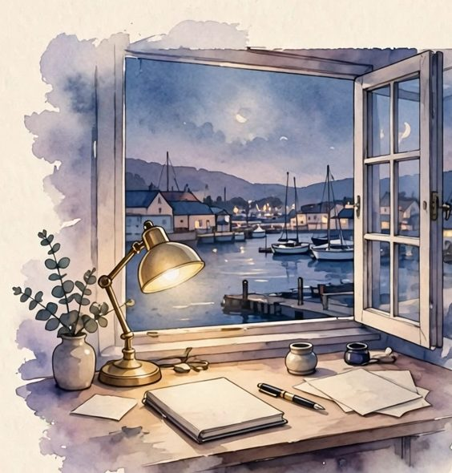
A writing desk stands by an open window over a harbor, a blank notebook and a lamp upon it.
The fourth hall concerns the tenant of the back house: the other self. Someone, after all, lives the dreamed life — rises in its mornings, works at its bench, ages in its weather — and that someone is recognizable. Same face, same history up to the fork, same laugh. The register calls this figure the other self, and the hall exists because meeting them, even in imagination, is a distinct experience with its own weather, neither simple longing nor simple regret.
The other self is not a rival and not an ideal. The Keeper is firm on this point, because visitors persist in miscasting the figure in both roles. The other self did not win anything; they took a different turning with the same equipment and have paid that turning's prices in full, most of them unrecorded. Nor are they the finished version of the tenant, polished by the road not taken. They are simply the same person, kept in different conditions — a second planting of the same seed, in the garden behind the wall.
The house proposes, as the hall's method, plain curiosity. Who is this self, exactly? What do they know that the visitor does not, and — the question visitors forget to ask — what does the visitor know that the other self never learned? The exchange, conducted honestly, is rarely one-directional. The lived life has grown things in its soil that the dreamed one, for all its light, could not. The register opens the hall with both chairs set out, and no chair at the head of the table.
38The Self Who Lives It
White beehives stand in a flowering meadow in the evening light.
Consider, for the length of a hall, the self who lives it — who actually got the cottage, the coast, the bench, the mornings. The first thing the register insists on is their full humanity: this self has Tuesdays too, and bills, and a back that complains about the cottage roof. The dreamed version of them, bathed in the back house's permanent good light, is a portrait; the self who lives it is a person, and the difference matters to every honest entry in this hall.
The second finding is that this self is not enviably free of a back house. The register has never located a life without one. The lighthouse keeper dreams of the city orchestra; the potter dreams of the ledger and the clean shirt. The self who lives the visitor's dream keeps, in their own drawer, some version of the visitor's actual life — its steadiness, its company, its roof that does not leak in that particular place. The tenancy is universal. Only the furnishings rotate.
This is not a trick to make visitors grateful, and the Dream Desk dislikes it when the finding is used as one. It is simply the register's most repeated observation, entered without agenda: the other self, met fairly, turns out to be a fellow tenant rather than a lottery winner. Two keepers of two lives, each with a door they do not open in company, have a great deal to say to each other — and the rest of this hall is largely the record of those conversations.
39Not Better, Different
The hall's central ruling is short enough to be kept on a card: not better, different. It is the verdict the Dream Desk hands down on every comparison between the self who lived this life and the self who lived the other, and it is handed down so consistently that visitors sometimes suspect the desk of evasion. It is not evasion. It is the only ruling the evidence supports, because the evidence never includes the other life's costs, and a comparison with half the books missing is not a comparison. It is a mood.
Different, examined closely, is not a small claim. The other self is different in their knowledge — they know the actual weight of the dreamed work, its boredom and its weather from the inside. Different in their losses, which are real and specific and entirely unguessed by the visitor. Different, above all, in what they take for granted, which is the surest marker of a life: the dreamed self is bored by precisely the mornings the visitor aches for. Familiarity performs this alchemy in every life ever lived, without exception.
The register offers the ruling as a relief, and most visitors receive it as one. If the other self is not better, then the lived life is not worse, and the whole exhausting trial collapses for lack of a charge. What remains is more interesting than a trial: two versions of one person, differently weathered, each holding knowledge the other lacks. The hall ahead arranges their meeting properly — without a quarrel, as the title of a later room promises, and with both of them, by the end, at one table.
40The Self I Greet Politely
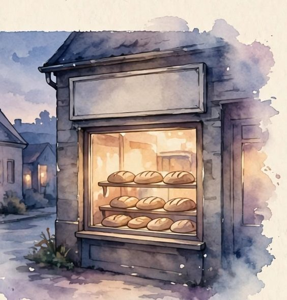
A small bakery window glows warmly before dawn, plain loaves arranged inside.
In practice, for most tenants, the relationship with the other self is neither a trial nor an embrace. It is a greeting. The other self is met the way one meets a former neighbor on a station platform — with recognition, a degree of warmth, and no expectation of resuming the tenancy. A nod across the years: so you went that way; I wondered. The register calls this the polite greeting, and far from finding it cold, the Keeper considers it one of the most civilized arrangements in the house.
The politeness is not a failure of feeling. It is a form of accuracy. The other self is, by definition, someone the tenant has never actually lived with; intimacy would be a pretense, hostility a waste. What is available — and sufficient — is acknowledgment: the dreamed self credited with existing, their road credited with being a real road, the parting credited with being nobody's fault. Many visitors arrive believing the greeting should be warmer or colder than it is. The register mostly finds it exactly the right temperature.
There are occasions, the Keeper notes, when the greeting lengthens — a season when the other self is consulted more often, their bench borrowed, their mornings audited for parts. And there are decades when the platform is passed without stopping at all. Both are entered without comment. The polite greeting keeps the line open at almost no cost, which is precisely its design: a door, like the garden door in the first plate, neither locked nor standing wide — ajar, with the light coming through, available at whatever hour the tenant next walks that way.
41Jealousy of One's Own Ghost
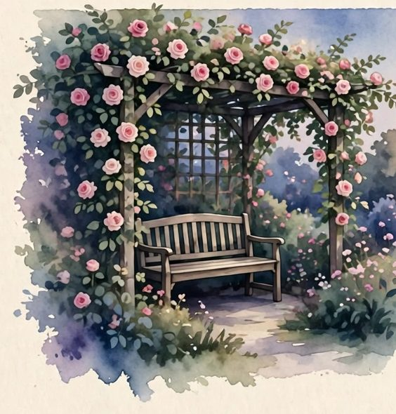
A garden bench rests under a pergola of climbing roses in the evening light.
It is a strange entry in the register: a person can be jealous of someone who never existed. The other self — the one who took the other road, kept the other city, learned the other trade — has no address and no biography, and yet he can be envied with a precision that real rivals rarely earn. The house records this without surprise. The ghost is the only competitor who never ages badly in the telling, never loses an argument, never stands in poor light. He is edited by the same hand that envies him, which is why the contest so rarely goes well for the living.
The jealousy, looked at calmly, is seldom about the whole other life. It is about one or two of its furnishings: the mornings, perhaps, or the work done with the hands, or the simple fact that the ghost's days appear uncluttered. Nobody envies a stranger's entire existence hour by hour, errands and weather included. The envy is a pointing finger, not a portrait. It indicates what the present life is short of, the way thirst indicates water without describing the well. The Dream Desk treats jealousy of the ghost as a note in the margin: something here is wanted, and it may be nearer than it looks.
There is also a courtesy owed in the other direction. The ghost, if he could keep a register of his own, would presumably envy something back — the friend who stayed, the parent known longer, the ordinary Tuesdays that turned out to be load-bearing. Every unlived life is somebody else's lived one, viewed from the far side of the wall. The house does not ask the tenant to stop envying. It asks only that the envy be read as correspondence rather than as a verdict. A letter from the other life is not an eviction notice from this one.
42The Self Who Stayed
Every dream of leaving implies its counterpart: the self who stayed. He kept the house, the street, the work that was already underway. In the dreamer's telling he is often treated as the cautious one, the one who lacked nerve, when in fact staying was its own long decision, renewed in small ways every year. The register gives him his due. He is not the absence of the other life. He is the presence of this one, with its accumulated repairs, its known winters, its people who can find him in the dark.
It is worth asking what the self who stayed has been quietly building while the dream was elsewhere. Roots are not dramatic, but they compound. A stayed life gathers local knowledge the way a garden gathers soil: which neighbor can be trusted at midnight, which roof leaks first, where the light falls in February. None of this appears in the dream's brochure, because brochures are printed elsewhere. The Dream Desk keeps a page for these holdings, entered without flourish, because a fair account of the other self has to begin with a fair account of this one.
The self who stayed is sometimes cast as the dream's opponent. The house suggests a different arrangement: he is its landlord. It is his roof the dream sleeps under, his table it is discussed at, his years that give the wanting its weight. A dream kept by someone with no life at all would be weightless. What makes the secretly dreamed life affecting is precisely that it is dreamed by a person whose actual life is full enough to cast a shadow. The shadow is not the enemy of the substance. It is the proof of it.
43The Self Who Left
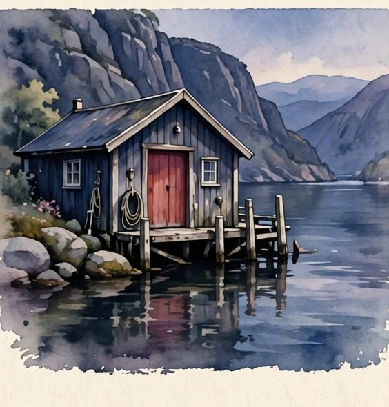
A fjord-side boathouse with a red door stands beside still, dark water.
The self who left is the dream's most frequent tenant. He took the train, signed the lease in the other city, said yes in the other language. In the register he is drawn in confident strokes, because departure photographs well: the door closing, the coast receding, the new street learning his step. The house keeps his portrait and honors it. But it notes, in a smaller hand, that the portrait was painted from the platform. Nobody holds his forwarding address. Nobody knows his winters.
A fair hearing for the self who left would include the parts the dream edits out: the first year of belonging nowhere, the friendships that would have to be begun again at an age when friendship has slowed, the homesickness that arrives not for a place but for a former self. None of this cancels him. It completes him. A ghost who is allowed his difficulties becomes a person again, and a person can be learned from, where a poster can only be saluted or resented. The Dream Desk prefers its ghosts three-dimensional.
There is a question the keeper sometimes leaves on the desk for visitors: if the self who left could write back, what would he ask about. Not the great fork in the road, most likely. Small continuities — whether the plum tree survived, whether the old friend still laughs the same way, whether the street kept its name. The leaver and the stayer are divided by less than the dream supposes. They are the same tenant, photographed from two sides of a door, each holding something the other set down.
44Two Lives, One Tenant
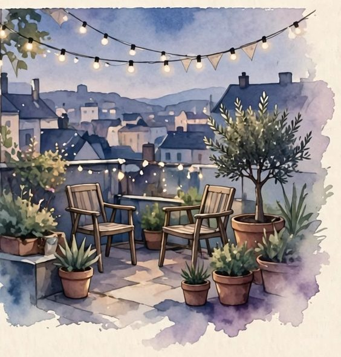
A rooftop garden with two chairs and a string of small lights waits out the dusk.
The arithmetic of the secret life is often misstated. It is not two lives competing for one supply of years, like tenants bidding for a single flat. It is one tenant keeping two rooms: the room he lives in, furnished and weathered, and the room behind the wall, kept swept and imagined, where the other furniture stands. He does not live in both. He lives in one and visits the other, the way someone visits a garden he planted but does not sleep in. The house finds nothing divided in this. A tenant is not torn because his dwelling has a door he opens rarely.
The trouble begins only when the two rooms are graded against each other daily, like rival applications. The lived room will always lose that comparison in certain lights, because it has weather in it — bills, colds, the chair that needs mending — while the unlived room has only weather of the picturesque kind. The register's remedy is bookkeeping honesty: compare whole with whole, or not at all. The unlived life, fully costed with its own winters and errands, becomes less of a reproach and more of a place, a real elsewhere, which is what it was all along.
One tenant, then, and the house is his. The keeper's work is not to merge the rooms or to brick up the door, but to keep the passage between them in good repair, so the tenant can visit the other life without feeling he has burgled his own. Many visitors report, after some years, a quiet change of use. The second room stops being where the real life supposedly is. It becomes a study, a storehouse, a place where certain wants are kept in good condition until the lived room has space for them.
45The Other Self Ages Too
The dream is usually stored at the age when it was first dreamed. The other self is forever twenty-five, or thirty, standing at the beginning of the other road with all his strength about him and none of his history. This is a courtesy of memory, but it is also an accounting error. The other self, had he lived, would have aged exactly as fast as the tenant has. He would have his own stiff mornings, his own reading glasses, his own list of names he can no longer call. The register insists on entering his birthdays too.
Letting the ghost age changes the conversation with him. A twenty-five-year-old ghost issues challenges; a sixty-year-old one exchanges news. The dream at sixty is not the dream at twenty-five with grey hair — its wants have edited themselves. The other self at this age probably does not dream of the metropolis. He dreams, perhaps, of a garden, a slower trade, a room of his own, things suspiciously similar to what the tenant dreams from this side of the wall. With age, the two lives often stop facing each other across a divide and begin, quietly, to converge.
This is not a trick for dismissing the dream. It is the opposite: the dream taken seriously enough to be given a whole life, including its later chapters. A want that survives being aged is a sturdier want. The Dream Desk keeps a simple practice for visitors who wish to try it: picture the other self at your present age, in his present season, and ask what he is doing this winter. The answer is rarely a reproach. It is usually something modest, human, and — the keeper notes it every time — partly available from here.
The Dream Desk
One desk receives all correspondence for this house — questions, corrections, and word of any life a visitor secretly dreams about: where it hides, its detail, its price, its small version. It is read in the order it arrives, and in confidence.
46Meeting Without a Quarrel
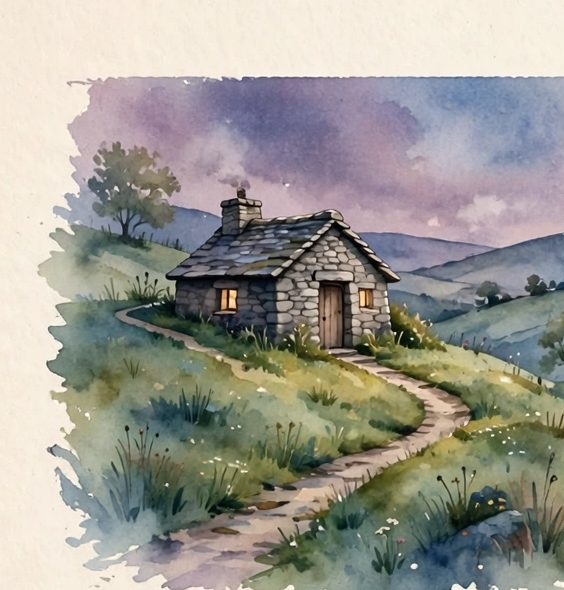
A shepherd's small stone hut stands on a green hillside, a winding path leading up to it.
Sooner or later, in the small hours or on a quiet road, the tenant meets the other self coming the other way. The dream usually stages this as a confrontation: the lived life accused, the unlived one holding the evidence. The house proposes a different staging. Two men of the same age and the same face, meeting on a path neither of them owns, with no judge present and nothing to win. What would they actually do. The register's experience is that, given the chance, they mostly compare notes — and that the notes are kinder than the rehearsal predicted.
The meeting goes better when neither self is required to justify the whole of his life. Justification is what turns a conversation into a trial, and trials are this house's one discouraged pastime. Instead, each reports what the road was actually like. The stayer describes what staying built. The leaver describes what leaving cost and what it bought. Somewhere in the exchange a discovery is usually made: that each man made his decision with the information of a younger man, and that the younger man did his honest best with a partial map.
The house does not promise the meeting ends in embrace or in any tidy reconciliation; this is a register, not a theatre. It records only that the meeting can be held without a quarrel, and that holding it changes the tenancy. Afterward, the other self is less of a ghost and more of a neighbor, someone whose house one passes with a nod rather than a flinch. The dream keeps its dignity. The life keeps its authority. And the path between the two doors, the keeper notes, grows a little shorter every time it is walked in daylight.
47The Self in the Mirror, Unalarmed
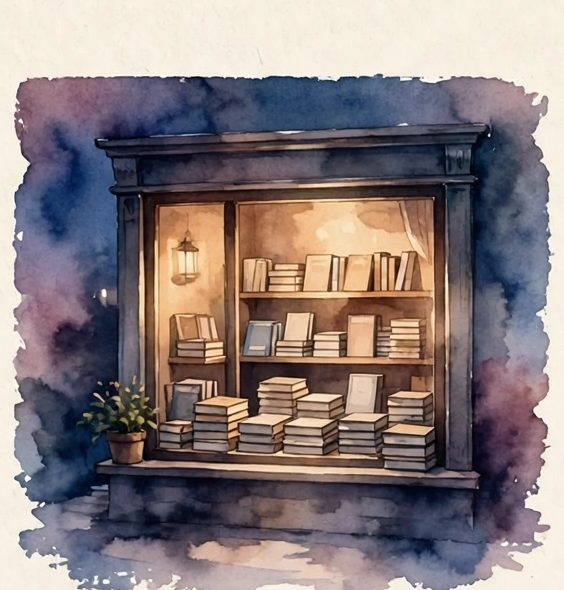
A bookshop window glows warm at night, stacks of plain books inside.
There is a small daily test of the secret life, and it happens at the mirror. The face there is the lived life's face: lined by its actual years, marked by its actual weather. Beside it, unbidden, the other face sometimes stands — smoother in imagination, lit by the other life's kinder sun. The house does not ask the tenant to banish the second face. It asks only that the first one be met without alarm: this is the face that did the living, and it has the documents to prove it.
Unalarmed is the operative word, and the keeper chose it carefully. Not proud, not defiant, not performing a contentment the tenant does not feel — merely unalarmed, the way one meets an old acquaintance whose news is mixed. The mirror is a poor courtroom and a decent window. What it shows is a tenancy in progress: someone who has kept a real life running, imperfectly and continuously, while carrying a second one in his head the whole time. That is not a small achievement. It is simply an unphotogenic one, and mirrors are not cameras.
In the register's long experience, the mirror test softens with a particular realization: the other self, meeting his own mirror in the other life, would be conducting the same negotiation. His face too would be the receipt for choices, and his ghost too would stand beside him wearing this tenant's face. The haunting is mutual, and therefore, in a strange way, fair. The house closes the entry with its customary dry note: both men are somebody's unlived life. Both are also, on the evidence of the mirror, still in residence.
48Both Selves at One Table
The house's emblem for this hall is a table set for two, where both occupants are the same man. It is not a summit meeting, and nothing is to be signed. It is supper. The lived self brings what the day actually contained; the other self brings the news from behind the wall — what is being dreamed this season, what has quietly stopped being dreamed, what has changed its shape. The register's rule for the table is the rule for any good household: nobody has to win supper. The two selves are not opponents awaiting a verdict. They are the two permanent residents of one life.
What is served at this table matters less than the seating. For years, in many houses, the other self is not seated at all — he is kept standing at the window, or shut in the drawer, or admitted only at three in the morning when nobody can see him eat. The result is predictable: an unseated guest becomes a disruptive one. The Dream Desk's whole practice can be stated as a seating reform. Give the dream its chair. Let it be present at ordinary hours, in ordinary light, as a member of the household with no vote and full speaking rights.
Visitors sometimes ask what decisions come out of such a table, expecting treaties. The honest answer, entered in the register year after year, is: mostly none, and that is the achievement. A dream that is regularly fed conversation stops rattling the windows. A lived life that is regularly told about the dream stops experiencing it as treason. The two selves discover their actual relationship, which is not rivalry but correspondence — and correspondence, kept up calmly over years, is how the house holds both lives without asking either to apologize for existing.
49What the Dream Asks
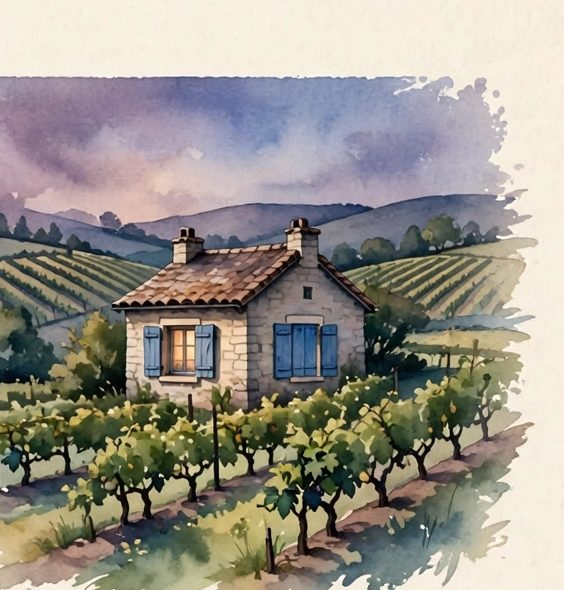
A small cottage with blue shutters stands among vineyards at dusk.
After the halls of hiding and of the other self, the register turns to a plainer question: what does the dream actually ask. Not what it symbolizes, not what it accuses — what it requests, in practical terms, from the tenant who keeps it. The house has learned to take the question literally, because dreams, asked literally, tend to answer modestly. The secretly dreamed life, examined at the Dream Desk like a letter finally opened, rarely turns out to be a demand for another existence entire. It is usually a request with a small print run: something specific, dated, and far less theatrical than its envelope suggested.
The asking is the part most tenants postpone, usually from fear of the size of the answer. An unasked dream has no dimensions, and what has no dimensions can be imagined at any size — continent-sized, life-sized, larger than the house. So it is kept unasked, the way an unopened bill is kept in a drawer, growing more frightening by the month while its actual figure sits unchanged inside. The Dream Desk's first service in this hall is simply to provide a table, good light, and the suggestion that the letter be opened. In the register's experience, the contents have never once matched the dread.
What follows in this hall is a survey of the asks themselves, taken from years of opened letters. They are smaller than their reputations, more specific than their legends, and they share one quality the keeper underlines: they are asks, not orders. A dream that has been asked and answered honestly — even answered in part, even answered not yet — changes its manner in the house. It stops knocking at unpredictable hours. It takes the chair it was offered, and it waits like a member of the household rather than a creditor at the door.
50It Asks to Be Noticed
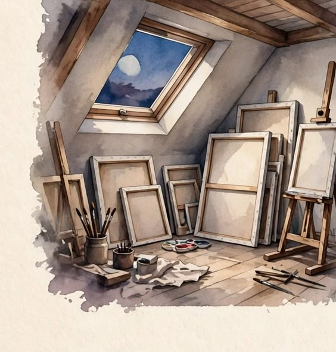
An artist's attic room with a large skylight, blank canvases leaning against the wall.
The first ask in almost every letter the desk has opened is also the smallest: to be noticed. Not granted, not funded, not obeyed — noticed. The secretly dreamed life has usually been kept the way a painting is kept in a corridor one passes daily without looking up: present, owned, and effectively invisible. The dream asks, before anything else, for the courtesy of being looked at directly, on purpose, in daylight, rather than glimpsed sideways in the last minutes before sleep or in the window of a passing train.
There is a reason this ask comes first and costs so little. A want that is never noticed governs from hiding: it edits choices without signing them, colors whole seasons without appearing in the register, and surfaces as a vague weather the tenant cannot explain. A noticed want can be conversed with. It can be asked the questions this hall exists to ask — what exactly, how much, at what price, this year or another. Noticing does not commit the tenant to anything beyond honesty. It is the difference between a noise in the wall and a knock at the door.
The house keeps the practice deliberately small. Noticing is not a ceremony; it is closer to watering a plant one has walked past for years. A minute of direct attention, given regularly, is the whole rite: the dream named, its current shape observed, its changes entered in the margin. Tenants who begin here often report a surprise the register has learned to expect. The dream, once noticed, does not grow louder and more demanding, as feared. It grows quieter and more precise — the way anything does when it no longer has to shout to be heard.
51It Asks for One Hour
Itemized, the dream's most common request is not a new life. It is an hour. One hour of actual time, in the actual week, given to the thing the other life is made of — the instrument, the language, the workbench, the road out of town. The register has seen this ask so often it has a column for it. The dreamed life, which from a distance looks like it requires everything, up close tends to request a modest recurring appointment, the way a garden requests watering rather than a change of climate.
Most tenants, when they finally check, discover the hour exists. The calendar that felt like a solid wall turns out to have the usual cracks in it: the hour spent scrolling other people's photographs, the hour given to a program nobody chose, the Sunday hour that belongs to no one at all. The desk does not lecture about this; the register simply notes the exchange rate. An hour a week is fifty-two hours a year, which is more time than many a small true version of the dream has ever asked for in total.
What the hour does, once given, is out of proportion to its size. A dream fed one honest hour stops feeling theoretical. The hands learn what the imagination only described. The tenant learns, too — learns whether the wanting survives contact with the actual activity, which some dreams do not, and that is also information worth an hour. The house is careful with its wording here: the hour is an appointment, not a down payment. Nothing obliges the tenant to a second hour. But the register observes that hours, like guests who are fed, tend to be invited back.
52It Asks for Honesty About Wanting
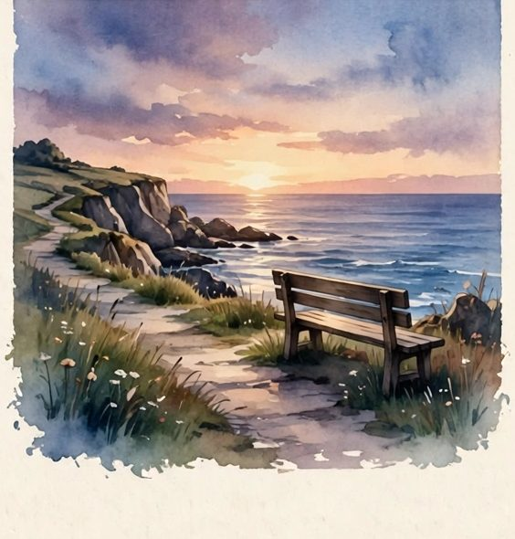
A coastal path with a wooden bench faces the sea at sunset.
Underneath the practical asks — the hour, the room, the season — sits a quieter one: the dream asks to be wanted honestly. That is, to be spoken of, at least at the Dream Desk, in plain words. I want this. Not wrapped in the protective joke, not introduced with of course it is impossible, not disguised as something noticed in other people. Most secretly dreamed lives are kept in a dialect of irony for decades, praised in others, mocked in oneself, and never once stated flatly by the person whose life they describe.
The honesty asked for is narrow, and the house is precise about its borders. Wanting admitted is not wanting obeyed. To say I want this at the desk signs nothing, schedules nothing, promises nothing to anyone, including the dream. It is a register entry, not a contract. But the entry matters, because an unadmitted want cannot be priced, scheduled, declined, or answered in part — all the honest operations this house performs. Only a want that has been stated can be dealt with fairly, by the tenant, in daylight, at the tenant's own pace.
Visitors sometimes fear that plain wanting, once spoken even privately, will grow teeth. The register's long evidence runs the other way. It is the unspoken want that behaves badly — leaking into unrelated decisions, souring unrelated pleasures, keeping the tenant vaguely at war with a life he actually values. The spoken want takes its seat at the table like the other self in the previous hall: present, accounted for, and considerably less disruptive than when it stood at the window. Honesty about wanting is not the first step toward the dream. It is the first step toward peace with it, whichever way the account is later settled.
53It Does Not Ask for Everything
A glass winter garden holds rows of potted citrus trees in warm evening light.
It is worth stating plainly, because fear states the opposite nightly: the dream does not ask for everything. It does not ask for the tenant's whole biography to be pulped and reprinted. It does not ask for the marriage, the friendships, the accumulated years, the house as it stands. When tenants finally itemize what the secretly dreamed life consists of, the list is consistently shorter than the dread — a place, a practice, a kind of morning, a way of spending the hands. The rest of the life, the great load-bearing rest, was never in dispute.
The impression that it asks for everything comes from a trick of scale. An unspecified want touches everything, the way fog touches every field it covers; it is not that the fog is enormous, only that it has no edges. Give the dream edges — name the town, the trade, the season, the hours — and it shrinks to its true size, which is usually the size of a room in the house rather than the house entire. The Dream Desk performs this edging as a clerical service. No tenant has yet left the desk reporting that the itemized dream was larger than the fog had promised.
There is a further comfort in the register, entered by the keeper with some emphasis: the life already lived is not the dream's rival but its foundation and, in large part, its content. The people in the tenant's actual life appear in the dreamed mornings too, oftener than the legend admits. The dream does not ask the tenant to become someone else somewhere else. It asks, in most of the files on record, for a modest rearrangement of the life he already has — a door opened in a wall he already owns.
54The Ask Is Smaller Than Feared
Every hall of this house has its recurring margin note, and this hall's is a sentence the keeper began writing years ago and has never needed to revise: it was smaller than feared. The tenant arrives braced for an enormous claim — a second mortgage on the whole of life — and the opened letter contains a request that fits on one side of a card. A course of evenings. A rented room for one season. A skill begun badly and continued slowly. The disproportion between the dread and the document is so regular that the desk now treats it as a law of the premises.
Why the fear inflates the ask is not mysterious. The dream is usually measured in the dark, at the hour when all figures double. It is also measured against the whole version — the complete other life, lived entire — because that is the version the imagination keeps framed in the corridor. But the dream itself, asked directly, rarely requests the whole version. It requests its own favorite part of it: the mornings, or the making, or the coastline. The whole version is the imagination's packaging. The ask is the contents.
The keeper is careful not to turn this into a promise, and the register makes no guarantees about any particular letter; a few asks on record were genuinely large, and they are handled in the next hall, where costs are counted. But the standing evidence deserves its sentence. Fear is a poor clerk: it rounds every figure up, in the dark, and presents the rounding as the bill. The Dream Desk exists to do the arithmetic over, in the morning, in pencil — and the arithmetic, most years, comes out kinder than the fear.
55A Dream Asks, It Does Not Demand
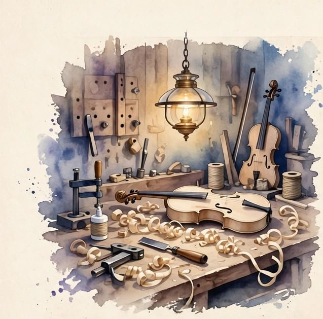
A violin maker's workbench holds pale wood shavings beneath a hanging lamp.
The grammar of dreams deserves its own entry, because so much suffering at the desk comes from misreading it. A dream asks; it does not demand. It petitions, it recurs, it waits in the corridor with its hat in its hands. It sets no deadlines, issues no ultimatums, and threatens nothing. It has no enforcement arm. Whatever in the night sounds like a demand — the sense of a closing window, a now-or-never pressure, a voice saying the whole of life is at stake — is, in the register's experience, not the dream speaking. It is fear, doing the dream's voice, badly.
The distinction is practical, not decorative. A demand must be answered at once, on the demander's terms, and anything answered under that pressure is answered badly — either a panicked yes that the life cannot support, or a panicked no that slams a door the tenant then guards for years. An ask can be considered. It can be priced, postponed, answered in part, answered in a smaller edition, or declined with courtesy and a clear conscience. The whole of this house's method follows from that one grammatical fact: everything here is done at the speed of consideration, not the speed of alarm.
There is a respect owed to the dream for its patience, and the keeper records it. The secretly dreamed life has usually waited decades without raising its voice: through the busy years, the lean years, the years when it was not thought of at all. It asks so quietly that a tenant can miss the asking entirely and mistake the resulting restlessness for a flaw in his character or his life. It is neither. It is a petition that has been waiting a long time to be read in full — and being read in full, not granted, is what most petitions in this house have ever wanted.
56Listening Without Signing
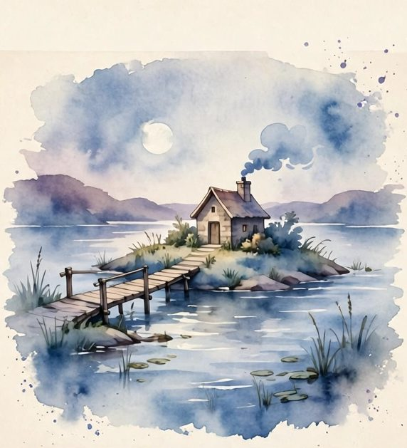
A tiny island with one small house is reached by a narrow wooden footbridge.
A skill this house teaches early, because everything else depends on it: a tenant can listen to the dream's whole case without signing anything. The hearing is not the agreement. One can sit through the full recital — the place described room by room, the other mornings, the other work, the whole shining inventory — the way one listens to weather in another country: attentively, with real interest, and no obligation to move there. Listening is an act of respect toward the wanting. It commits the listener to nothing except having heard.
Many tenants refuse the hearing precisely because they believe it is a signature. They keep the dream unasked and unread, the letter sealed in the drawer, on the theory that to know exactly what it wants would be to owe it. The register finds the opposite in its files. It is the unheard dream that behaves like a debt — vague, total, and collectible at any hour. The heard dream becomes a document: finite, specific, and filed. After a full hearing, tenants commonly report the strange plain sensation the desk calls a quiet desk — the wanting present, the paperwork in order, nothing buzzing.
Listening without signing also protects the dream, and this is less obvious. A dream that is granted a hearing need not exaggerate to be noticed; it can afford to state its true, modest ask instead of performing the enormous one it uses to get attention at three in the morning. The keeper's practice is therefore generous with hearings and stingy with signatures, and the house rules are posted accordingly: the desk is always open for listening. Signing, in either direction, is a separate appointment, made in daylight, and entirely the tenant's to schedule or to never schedule at all.
57The Question Under the Question
Ask a tenant what his dream asks, and he will usually answer with the surface question: could I live there, could I do that work, could I begin at this age. The Dream Desk has learned to listen for the question underneath, because the surface one is rarely the one keeping him awake. Under could I live there sits would I still be myself there. Under could I do that work sits am I permitted to be a beginner again. Under the question about money sits, very often, a question about whether wanting this makes him disloyal to the life and the people he already has.
The under-question is not a trick or a trap; it is simply the load-bearing one. Answer the surface question perfectly — the town researched, the costs totaled, the course catalogued — and the tenant may feel no lighter at all, because the weight was never in the itinerary. It was in the permission. The desk's practice is to bring the under-question into the light and let it be asked in its own words. Most under-questions, once stated plainly, turn out to be answerable, and the answer is usually gentler than the tenant feared: yes, he would still be himself; yes, beginners are permitted at every age the house has records for.
It is worth noting what the under-question almost never is. It is almost never whether the dream is impressive enough, or young enough, or approved of by the audience the tenant imagines watching his life. Those questions belong to the corridor's other tenants and their opinions, and the house does not keep a desk for them. The question under the question is always addressed to the tenant himself, in his own name, about his own tenancy. That is why it can be answered here, quietly, without consulting anyone — and why its answer, once given, tends to settle several floors of the house at once.
58What It Asks This Year
A market stall with glass jars and woven baskets stands in soft early morning light.
The register keeps the correspondence current, and its preferred interval is a year. The dream's ask is a dated document. It is not the same ask it made ten years ago, and it will not be identical next year, because both parties to the correspondence are alive and editing. Asking what it asks this year — this year, with this year's health, means, obligations, and weather — is the desk's way of preventing a common archival error: answering, or refusing, an ask the dream no longer makes, from a file long out of date.
This year's ask is usually remarkably specific, because the dream, like any long tenant, has learned the house it lives in. It does not ask the man with the new grandchild for a year abroad; it asks for the mornings. It does not ask the woman in the lean season for the whole other career; it asks for the evening course, the rented bench, the one skill resumed. Read generously, the dream sizes its requests to the life it hopes to join rather than replace. Read in the register's files, year by year, the asks read like a long negotiation conducted in good faith by both sides.
The yearly asking also gives the tenant yearly standing to answer in kind: this much, this year, gladly; that much, not this year, and here is the season to ask again. Answers expire, like asks, and that is a mercy in both directions — a refusal need not be forever to be honest, and a small yes need not swell into a lifetime contract. The house closes the entry with its plainest summary of the whole hall: keep the correspondence current. A dream answered in this year's terms stays this year's size, which is a size a life can hold.
59The Ask Changes With Age
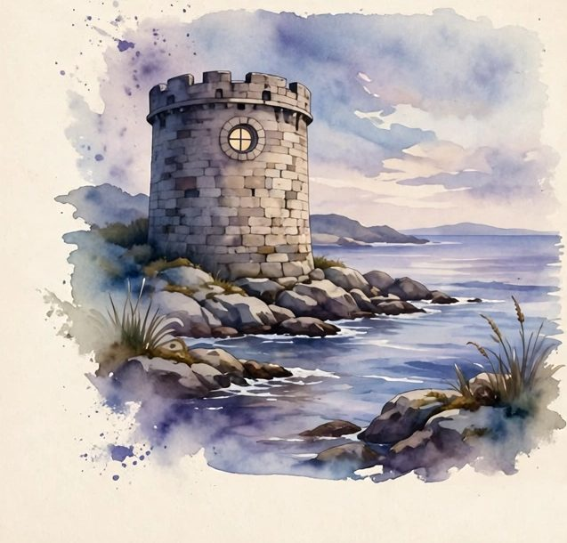
A round stone tower with a single round window stands by the sea.
At twenty, the dream asks for distance: another country, another name almost, a life at the far end of the longest available road. At forty, it asks for depth — the same city, perhaps, but the other work, the real work, the mornings spent on the thing itself. At sixty-five it asks, in the register's experience, for nearness and for mornings of a particular quality: a garden within walking distance, hands making something that stays made, the sea or the hills close enough to visit without an expedition. The files are full of these editions, filed in order, none of them marked as the true one.
It would be a mistake to read the sequence as the dream being corrected — as if the young ask were a draft and the old ask the final text. Each edition was accurate for its season. The twenty-year-old genuinely needed the asking to be about distance, because distance was the shape his wanting took before he had a life to deepen. The sixty-five-year-old's nearness is not the young dream surrendered; it is the same wanting, weathered, its essentials kept and its packaging long discarded. What the dream wanted all along shows more clearly with each edition, the way a coastline shows at lower and lower tides.
The keeper draws one practical conclusion, and enters it for the tenants who grieve the earlier editions. An ask that has changed is not an ask that has been betrayed. The tenant who answers the current edition — the garden now, the mornings now — is not settling for the faded copy of a brilliant original. He is answering the letter that actually arrived, from the dream he actually keeps, in the year he actually lives in. The house regards that as the whole of fidelity, and it records, dryly, that the dream has never once complained about being answered in its current edition.
60Answered in Part, Honestly
The hall of asks closes with the register's most common final entry, common enough that the desk keeps a stamp for it: answered in part, honestly. Most secretly dreamed lives on record were never answered whole — the whole version was priced, in the next hall's terms, and found beyond the life or beyond the years. But most were answered in part: the hour became real, the skill was begun, the season was taken, the room was furnished. And the part, answered in good faith, proved again and again to be the load-bearing part — the part the wanting was actually about.
A partial answer given honestly differs entirely from a partial answer given as a distraction, and the desk distinguishes them carefully. The honest part is chosen because it is the heart of the ask, not because it is the cheapest gesture available; it is given fully, not performed; and it is recorded as what it is, without being dressed up as the whole. Tenants know the difference in their own houses. The honestly answered part settles the correspondence. The performed part merely postpones it, and the dream, patient as it is, returns with the same letter at the next quiet season.
There is no failure recorded in this entry, and the keeper insists the stamp be read correctly. A dream answered in part, honestly, is not a dream defeated. It is a negotiation completed between two lives that both deserved respect: the one lived, with its claims honored, and the one dreamed, with its heart answered rather than its whole map. The register's closing line for the hall is the house's own arithmetic, offered without ornament: part, honestly, outweighs whole, in fantasy — and the scale, in file after file, has never once tipped the other way.
The Dream Desk
One desk receives all correspondence for this house — questions, corrections, and word of any life a visitor secretly dreams about: where it hides, its detail, its price, its small version. It is read in the order it arrives, and in confidence.
61What the Dream Costs
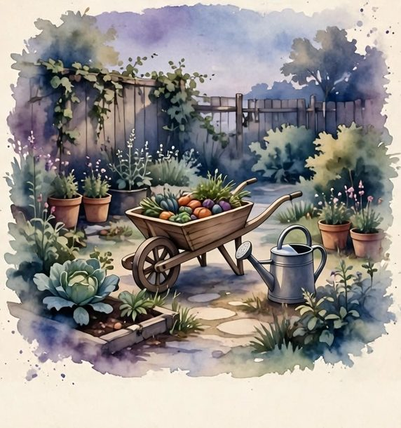
A kitchen garden with a wooden wheelbarrow and a watering can rests in evening light.
This hall keeps the ledger, and it opens with a defense of ledgers. To ask what the dream costs is not disloyalty to it, and it is not the first move in talking oneself out of it. It is the same respect the house pays everywhere else: the dream treated as real enough to have a price, the life treated as real enough to have a budget. A want that is never priced stays the size of the weather — everywhere, shapeless, and faintly frightening. A priced want takes its place among the household's other serious things, where it can be considered like an adult matter, because it is one.
The costs named in this hall are of several currencies, and the register separates them because confusion between them causes most of the misery at the desk. There is money, plainly. There are years, and parts of years. There are the arrangements of other people, whose shares are real and will be given their own entry. There is the present life itself — its furniture, its routines, its hard-won simplicities — which the whole version of the dream would rearrange whether the tenant wills it or not. And there is the cost, running quietly in the other column the whole time, of never touching the dream at all.
Counting, the keeper insists from the first page, is not refusing. The ledger is not a machine for producing the word no; the same arithmetic that has closed some doors at this desk has opened others, by showing that a feared price was mostly fog. What the ledger refuses to do is lie in either direction. It will not inflate the dream's price to spare the tenant a decision, and it will not hide the price to flatter the dream. Everything in this hall is entered twice-checked and without drama — because drama, as the house has noted before, is what happens when accounts are kept at three in the morning instead of at a desk.
62The Price of the Whole Version
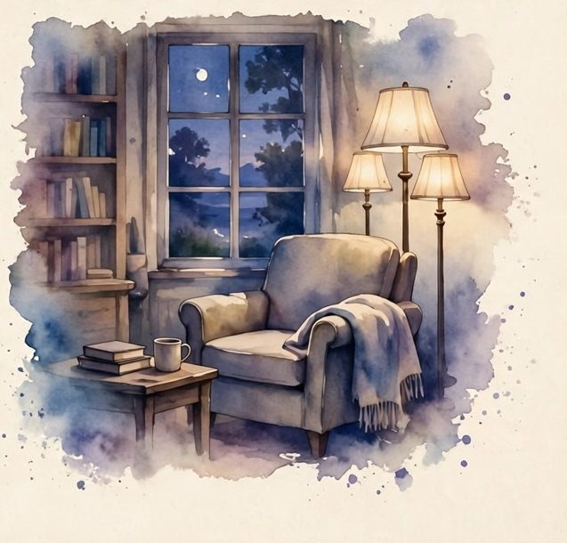
A cozy reading nook with an armchair and a tall lamp stands beside a twilight window.
The whole version's price is the one everybody quotes, and it is genuinely large. To live the dreamed life entire would cost the move, the retraining, the goodbyes, the decade of being a beginner in a new place among strangers, the old life dismantled plank by plank while the new one is still mostly drawing. Entered honestly, the figure is sobering, and the register does not soften it: for most tenants, in most years, the whole version costs more than the life can pay without breaking things the tenant is not willing to break. That is a real finding, and this house respects real findings.
But the whole version's price is often misread, and the misreading costs more dreams than any refusal. It is misread as the only price — as if the dream were sold exclusively in one enormous edition, take it entire or leave it on the shelf. A tenant who believes that faces a false choice between everything and nothing, and understandably, repeatedly, chooses nothing, and calls the choosing realism. The register's clerks see the pattern constantly: whole-version shock, recorded as if it were a verdict on the dream itself, when it is only a verdict on one size of it.
The desk's practice is to enter the whole version's price in full — and then to keep writing. Below it go the prices of the editions this house actually deals in: the season, the room, the hour, the skill. The columns look nothing alike. Tenants are frequently startled to discover that the dream they had been refusing for twenty years at the whole price was available all along at prices they pay for lesser things without a meeting. The whole version is not thereby declared a fantasy to be discarded. It is simply priced, accurately, as the most expensive way to answer an ask that usually requested far less.
63What Staying Costs, Too
Every ledger at this desk has two columns, and the second is the one tenants forget to keep. Staying costs too. Not staying in the sense of failure — the register has no such entry, and the lived life is honored in every hall of this house — but staying entirely untouched by the dream, year after year, levies its own quiet tax. It is paid in a particular tiredness that rest does not fix, in pleasures that arrive slightly muted, in the low, regular expense of steering conversations, and whole afternoons, around a country of the self that is never visited.
The tax is easy to miss because it is never invoiced at once. It leaves as small change: the flash of envy at another person's ordinary morning, the disproportionate sadness at a song, a photograph, a street in a film. The Dream Desk does not dramatize these entries; it merely notes that they are entries, that they recur, and that over thirty years small change sums to a figure the tenant would have wanted to see in writing before deciding it was negligible. Honest bookkeeping counts the cost of the road not taken with the same pencil it uses on the road.
This column is not kept in order to make staying look foolish — the house would close before it kept such a column. It is kept so that the decision, whichever way it goes, is made with the whole account open. A tenant who sees both columns and still chooses the untouched life has made a real decision, and the register records it without a footnote of regret. A tenant who has only ever seen one column has not decided anything; he has merely defaulted, and defaults, unlike decisions, have a way of being revisited at three in the morning for the rest of a life.
64The Cost Counted Calmly
A sailboat lies at anchor in a calm bay under a violet evening sky.
How the counting is done matters as much as the figures, so the desk has a method, and it is mostly a method of translation. The dream's cost arrives at the tenant's mind in weather words — everything, always, too late, impossible — and the first clerical act is to translate weather into units. Hours per week. Money per season. Which actual arrangements, with which actual people, would actually change. Weather cannot be negotiated with; units can. A cost stated as an unpayable everything becomes, translated, a list — and lists, unlike weather, have individual items that can be taken one at a time.
The second rule of the method is daylight. Figures assembled at night are returned unfiled; the desk does not recognize their authority. In the morning, with tea, the same dream presents its accounts in a smaller and more legible hand, and tenants regularly discover that the midnight total was fear's surcharge rather than the dream's price. The third rule is paper. A cost carried in the head is re-charged every time it is remembered, at whatever rate the remembering mood sets. A cost written down is charged once, accurately, and then sits still in the register where the tenant can consult it instead of re-suffering it.
Counted calmly, most costs turn out to be neither trivial nor terminal, and the register regards that middle finding as its signature result. The dream is not free; the house has never pretended otherwise, and tenants are right to be suspicious of any accounting that finds no price at all. Nor is it ruinous, except in specific, nameable ways that can then be planned around or honestly declined. It is a price, of the ordinary serious kind, attached to an extraordinary private thing — and a price, calmly counted, is the beginning of every fair arrangement this house has ever made.
65Other People's Shares
A mountain lake lies still, a small wooden dock reaching into the water.
The dream's price is not paid by the dreamer alone, and this hall does not pretend otherwise. A partner's routines, a child's stability, an aging parent's nearness, a friend's standing arrangement, a colleague's reliance — the dreamed life, lived at any size, draws on accounts held jointly with other people. Their shares are real entries in the ledger, entitled to their own lines, and the house enters them without apology. A dream priced as if the tenant lived alone on an island is priced falsely, however beautiful the island, and false prices produce real damage when the bill arrives addressed to the whole household.
The register, however, keeps a second distinction in this entry, learned from long observation: the difference between actual shares and imagined vetoes. Again and again, a tenant prices the dream out of existence on behalf of people who were never consulted — the partner assumed to object, the friend assumed to laugh, the family assumed to be scandalized. When the consultation finally happens, often years later, the imagined veto frequently turns out to have been a shrug, or an offer of help, wearing the costume of a refusal. The desk does not advise consulting everyone about everything; it advises only that imagined shares be marked as imagined, in pencil, until they are known.
The shares themselves, when they are real, deserve more than arithmetic respect: they deserve the courtesy of being counted early, while there is still time to shape the answer around them. A season chosen with a partner's calendar open on the desk is a different purchase from the same season announced afterward. The house's experience is that other people, treated as shareholders rather than obstacles, often prove willing to hold a share of the dream themselves — a loan of hours, a kept house, a kept confidence. The ledger's final line in this entry is one of its warmest: no dream on record was cheapened by being costed honestly with the people it touched.
66Time, the Only Currency
Strip the ledger to its base metal and one currency remains: time. Money, within limits, can be re-earned, borrowed against, saved toward. Help can be hired, favors exchanged, arrangements renegotiated. But the dream is paid for, at every size, in the one substance the tenant cannot manufacture — hours of a week, seasons of a decade, the finite and unrenewable mornings of a life. The Dream Desk therefore asks its first costing question in time before money: not what would it cost, but when would it happen, and what currently occupies that when. Answers in hours tend to be honest in a way answers in money are not.
Counted in time, the dream often proves surprisingly cheap, which is precisely why the desk insists on the currency. The whole imagined catastrophe of the other life reduces, at the small true size, to an hour on Tuesdays, a Saturday a month, one season in five years. These are sums a life already spends, unitemized, on things it values less — and the register does not scold the tenant for the discovery. It records it, because a price stated in a currency the tenant actually holds is a price that can actually be paid, and the difference between an unpayable dream and a payable one is often nothing but the unit of account.
The reverse entry belongs in the same ledger, and the house keeps it without flinching: the untouched dream is also paid for in time. The hours spent rehearsing it in the last minutes before sleep, the afternoons tinted by it, the years of its quiet tenancy — these are expenditures too, drawn from the same finite account, purchasing nothing but the rehearsal. Time will be spent on the dream either way; that is the one finding this hall delivers without exception. The only question the ledger leaves open is whether the hours buy the thing itself, in some honest edition, or only the imagining of it, at full price, forever.
67The Cost of Keeping It Secret
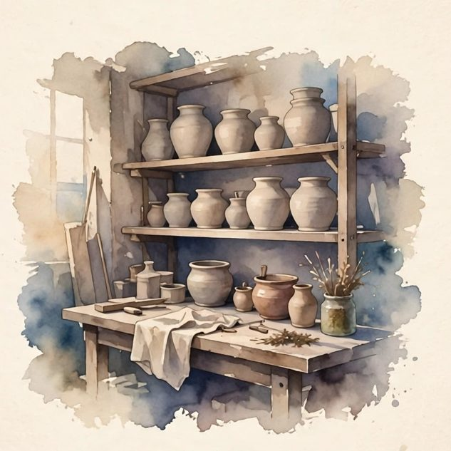
Wooden shelves hold plain unglazed clay pots in a quiet workshop.
Secrecy has a price, and this hall enters it without taking sides about whether the price is worth paying. Keeping the dreamed life secret costs, first, a steady expenditure of attention: the double bookkeeping of a whole country of the self that must be steered around in conversation, remembered before certain people, forgotten on cue. It costs the small, repeated labor of the deflected question and the edited anecdote. And it costs a particular loneliness that has nothing to do with being alone — the loneliness of a central fact about one's life having no witness anywhere, not one, in decades of evenings among people who believe they know the tenant well.
The register is careful here, because the house honors secrecy elsewhere in its halls and will do so again before this one ends. A secret kept kindly is a legitimate way to keep a dream, and for some tenants — some households, some countries, some decades — it is the only way. The entry exists not to prosecute the secret but to invoice it honestly, so that the tenant keeps it the way the house keeps everything: knowingly, at a price seen in daylight, rather than by default and at whatever rate the dark sets. A chosen secrecy is a tenancy arrangement. An unexamined one is closer to a leak.
It is also recorded, in fairness, what the secrecy buys, since no tenant pays a price for nothing across forty years. It buys the dream's safety entire: unwitnessed, the dreamed life cannot be laughed at, managed, advised about, or improved by committee. It stays exactly the tenant's, in its original condition, like a garden behind a wall that no visitor has ever suggested paving. Some tenants, seeing both lines, pay the price of secrecy gladly and record the payment as one of the sound purchases of their lives. The desk stamps those files without a murmur. The cost was counted. That is all this hall has ever required.
68The Cost of Saying It Aloud
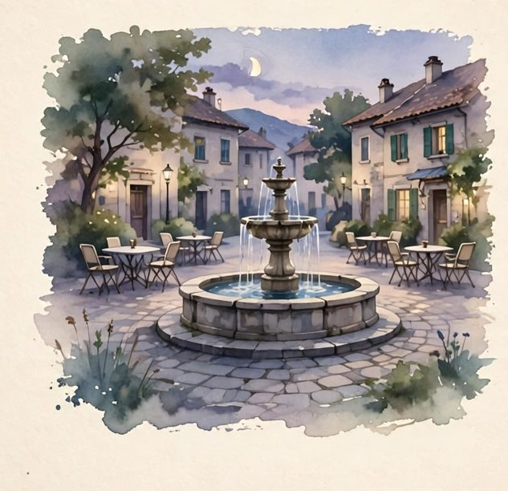
A village square with a stone fountain and empty café tables settles into dusk.
Saying the dream aloud also costs, and the symmetry of this hall requires the entry. A dream spoken leaves the tenant's sole custody. Other hands may now pick it up — kindly hands, mostly, but hands with their own fingerprints: the listener hears it in the listener's own vocabulary, repeats it slightly wrong at the next telling, improves it with suggestions, files it under things the tenant is known to want. The said dream can be encouraged and can be mishandled, can be remembered at the wrong moments and forgotten at the right ones. Its purity, which secrecy guaranteed, is spent the moment the sentence is finished.
There are subtler charges in the same entry. A spoken dream acquires witnesses, and witnesses, however gentle, change the tenant's relation to it: what was a private correspondence becomes, faintly, a public position, something one might be asked about, might be seen to fail at, might have to explain at next year's table. Some dreams, and some seasons of some lives, do not benefit from an audience, and the house does not join the world's chorus in declaring that everything real must be announced. The cost of saying is real. It is entered here in full, at the same size as the cost of silence on the facing page.
What the register can add, from its files, is only the shape of the exchange: the said dream trades custody for company. It loses the wall and gains the witness; loses perfect safety and gains the possibility — no more than that, and the house promises nothing — of help, of recognition, of the astonishing ordinary experience of another person saying that they keep one too. Whether that trade is worth its price is the tenant's arithmetic, not the desk's. This hall's whole doctrine can be written on its door: both columns, honestly, in daylight — and then the tenant, who was never the ledger's clerk but always its owner, decides.
69Not Every Price Is Too High
After several entries of prices, refusals, and taxes, the register turns a page and records the opposite finding, which its files support just as strongly: not every price is too high. A surprising number of the dreams brought to this desk, priced honestly and in full, turned out to be affordable — not free, not cheap in the dismissive sense, but well within what the tenant was already paying, in other currencies, for the privilege of leaving them untouched. The discovery is so common that the keeper has a dry name for the moment it lands: the tenant discovers he has been standing in front of an open gate, describing the wall.
Part of the surprise is that prices, seen whole, behave differently from prices imagined in installments of dread. A season's rent for the room by the sea, stated as one figure, is a decision. The same figure, feared without ever being stated, is a climate — it rains on everything for years. Tenants also discover, reading their own ledgers, what they already pay without deliberation for things they value far less than the dream: subscriptions to other people's urgencies, the maintenance of appearances, the high running costs of a settled dissatisfaction. The register does not rebuke these expenditures. It simply places them on the same page, where comparison does its quiet work.
The house is careful, as always, not to convert the finding into a slogan. Some prices in these files were too high, and the next entry honors the tenants who declined them. But the balance of the record deserves its plain statement here: the unaffordable dream is rarer than its reputation, and the affordable one is usually not the shrunken remainder of a grand original. It is the grand original's true heart, discovered by arithmetic to have been within reach for years — an hour, a room, a season — waiting only for someone to do the sum in daylight and find, to their own astonishment, that they could pay.
70Some Prices Are Real Refusals
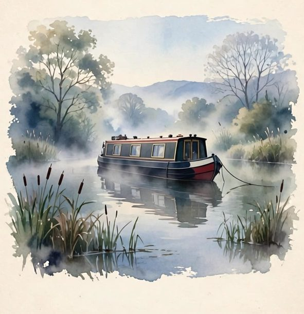
A narrowboat rests on a misty river at dawn.
Honesty in this hall runs in both directions, and this entry keeps the harder direction. Some prices are real refusals. The dream whose cost is a child's settled world, a promise made to another person and meant, a parent's last years spent at a distance, a body that will not bear the journey — these are not fears dressed as figures. They are figures. A tenant who reads them and declines has not lacked nerve, information, or imagination. He has done the arithmetic correctly and found the answer the arithmetic contained, and the register records his refusal in the same respectful hand it uses for every purchase in its files.
The house distinguishes, with some care, between a real refusal and a premature one, because the two are often dressed alike. The real refusal comes after the counting: units translated, daylight observed, other people's actual shares consulted. The premature one comes before, assembled from weather words and imagined vetoes, and it tends to dissolve under the desk's ordinary procedures. The distinction matters because the premature refusal borrows the real one's dignity — it lets a tenant feel he has weighed something he has only feared. The desk's service is unglamorous: to make sure that when a refusal is entered in the register, something was genuinely weighed first.
A real refusal, once entered, is not the end of the correspondence, and the keeper notes this for the tenants who fear it will be. The dream priced and declined does not vanish in a grievance; in the register's experience it changes its manner, like everything else in this house that has been treated honestly. It becomes an honored exhibit rather than an unpaid bill — visited, regarded, even loved, without the old static of the unasked question humming behind it. The next entry describes the instrument that makes this possible. Refusal, done properly, is one of the things the instrument is for.
71The Ledger, Without Drama
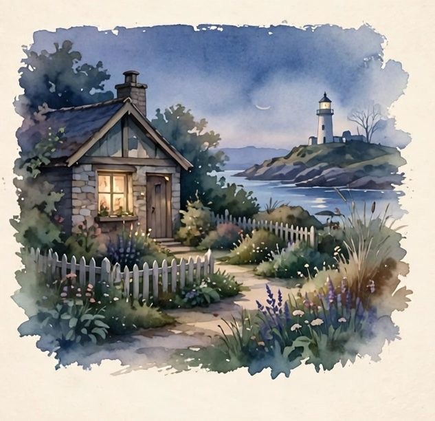
A lighthouse keeper's cottage garden with a low picket fence and one lit window.
The practice itself is almost disappointingly plain, and the house prefers it that way. A page. Two columns. Plain words, in pencil, in the morning. On the left, what the dream would cost, in its several honest sizes — the hour, the room, the season, the whole — each in its true currency of time, money, and other people's shares. On the right, what the untouched dream is already costing, entered with the same care and without a single theatrical adjective. The page is reviewed perhaps once a year, the way a household reviews any standing account, and then it is put back in the register, where it stops charging interest in the dark.
Without drama is the entry's whole discipline, and it is harder than it sounds, because drama is the native bookkeeping system of the secret life. Drama enters costs at three in the morning, in round numbers, with the whole of existence as the unit. It converts a question about Tuesdays into a verdict about a biography. The ledger refuses drama's arithmetic at the level of form: no entry is accepted that cannot name its unit, its season, and its evidence. Everything else is returned to the tenant with the desk's standard marginal note — this is weather, not figures; bring it back as figures and it will be entered gladly.
What the ledger gives, in exchange for its plainness, is the one thing drama never provides: an ending to the accounting. A tenant with a kept ledger knows what the dream costs and what it costs to leave it, and knowing, he can stop re-deciding the question nightly. The decision he makes from the page may be yes, no, in part, or not this year — the register honors all four in the same hand. What matters to the house is that it was made once, properly, from figures, and can be revisited annually like a lease rather than re-litigated like a haunting.
72Priced, Not Purchased — and That Is Allowed
The hall of costs closes with the state its title names, which the register recognizes as complete and legitimate: a dream fully priced, deliberately not purchased — and that is allowed. Not postponed under a euphemism, not failed at, not surrendered in a fog of self-reproach, but priced in daylight with the whole account open, and then, by a tenant in full possession of the figures, declined. The house wishes to be very clear that this outcome stands in its records with the same dignity as every purchase. A decision made with open eyes is not a smaller thing than a dream pursued. In several files it is the bravest entry on the page.
What changes, after such a decision, is the manner of the keeping. The unpriced dream nags because its question is open — perhaps, someday, if only, at unpayable rates of interest. The priced and declined dream knows its answer and can be kept the way a person keeps a beautiful house in a street he has chosen not to live in: he may pass it, regard it, even love it, and sleep soundly in his own. Tenants report, with some surprise, that the dreaming itself grows gentler after a real refusal. The dream stops auditioning as a creditor and resumes its older office — companion, compass, the second room in the house that is visited for pleasure rather than audited in fear.
The keeper closes the hall's register with the entry he writes, in one form or another, at the foot of every completed account. The dream was never owed a purchase. It was owed a fair hearing and an honest price, and it has received both. Whatever the tenant decided, he decided as the owner of the whole account — both lives, both columns, all the figures his own. The house asks nothing further of him in this hall. Ahead lie the small versions, for those whose arithmetic pointed the other way, and the door to them, like every door in this building, opens from the tenant's side only.
73The Small Version
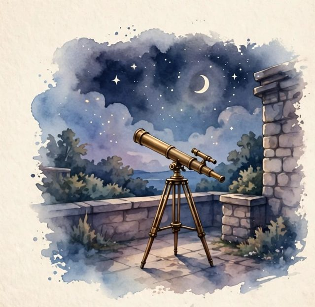
A brass telescope stands on a stone terrace under a starry night sky.
This hall trades in scale, and it opens by defining its term. The small version is the dream at a size the present life can honestly hold — not a fragment broken off it, not a souvenir of it, not a photograph of the real thing. It is the thing itself, drawn smaller by the same hand that drew it large. A melody played on one instrument instead of an orchestra is not a lesser melody; it is the same music, in a room. The secretly dreamed life, the register has found, nearly always has such a version: a size at which it fits through the door of the life already standing, without anything load-bearing being removed.
Why the small version goes undiscovered for decades is a matter of framing. The imagination keeps the dream at its most cinematic size — the whole relocation, the whole reinvention — because the imagination is an artist, not a clerk, and large canvases are its pleasure. At that size the dream is unpayable, and the unpayable dream gets filed, year after year, as impossible in general. The Dream Desk's whole labor in this hall is reframing: not shrinking the dream, which sounds like a loss, but finding the size at which it was always meant to be tried first — the size at which it becomes a question about this year instead of about fate.
The keeper offers one test for whether a proposed small version is genuine, and it is a test of recognition. A true small version, described aloud, makes the tenant feel the specific tug of the dream itself — smaller in the chest, perhaps, but in the same place. A false one, a token gesture chosen to quiet the conscience, produces only the flat feeling of having performed something. The files are full of both, and tenants can tell them apart instantly once the test is named. The small version is the dream, still warm, at a scale the calendar can carry. Everything in this hall follows from keeping that definition exact.
74A Smaller True Version
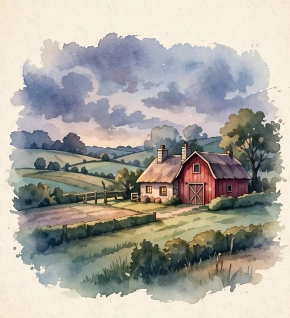
A small farmhouse with a red barn stands among rolling green fields at dusk.
Finding the smaller true version is an exercise in identifying what, in the dream, is load-bearing. The dreamed life arrives as a bundle: the place, the work, the people, the light, the mornings, the tools — and the tenant tends to treat the bundle as indivisible, as if removing one beam collapsed the whole. It rarely does. Somewhere inside the bundle is the element the wanting is actually about, and the register's files suggest it is usually one of a small number of things: working with the hands, being outdoors in weather, making something that stays made, living within sight of water, having the mornings be one's own.
The method is subtraction, performed in conversation at the desk. Remove the famous skyline: does the dream survive. Remove the foreign language, the coastline, the title, the audience. Keep removing the scenery, gently, until what remains cannot be removed without the wanting itself going quiet — and that remainder is the core. It is frequently almost embarrassingly portable. The dream of the vineyard, stripped of acreage and latitude, may prove to be the dream of working among growing things with one's hands and eating what the season gives; and that dream, it turns out, can be true at the size of a garden, a rented plot, a row of pots, and still be the same dream, telling the same truth about what the tenant wants his days to contain.
A smaller true version is therefore not the dream compromised; it is the dream understood. The whole version often contains a great deal that was only ever packaging — the setting the imagination chose the year the dream was first dreamed, kept ever since out of loyalty to the wrapping. The tenant who finds the core has not betrayed the original. He has done what the original, asked at the desk in this year's terms, would probably have asked him to do: keep what is true, at whatever scale the present life affords, and let the scenery be negotiable. The register records these findings without triumph, as simple good news, plainly entered.
75One Room of That House
The dreamed life, in most files, has a house at its center, and the house has many rooms: the workshop with its north light, the library corner, the studio, the kitchen built for long mornings, the room where the other work gets done. The lived life cannot hold the house entire — that is the whole version's price, already counted. But a house is not the smallest unit of itself. A room is. And the register's experience, across hundreds of tenancies, is that one room of that house, actually furnished and actually used, changes the tenant's relation to the dream more than the whole imagined house ever did in thirty years of being imagined perfectly.
One room is a modest architectural claim, and that is its power. It asks for a corner, a spare chamber, a converted shed, one end of a long table claimed in perpetuity — space of a size that households can usually find once they are honestly looking, because households are ingenious about space for the things they have decided are real. The room then does what rooms do: it gives the dream an address inside the lived life. The instrument no longer lives in its case as a reproach; the workbench no longer has to be assembled and dismantled nightly like a traveling fair. The dream, given a room, begins to accumulate the patina of use, which is the one thing imagination cannot supply.
The keeper notes a further effect, recorded so consistently that it has the status of a house rule of thumb: one real room tends to reclassify the rest of the dreamed house. The unfurnished remainder stops glowing like an accusation and becomes what it actually is — plans, possibilities, a drawing kept in the register for another season or another life. The tenant who has furnished one room is no longer a man exiled from the whole house. He is a resident with an extension underway, at his own pace, in his own time. The difference, in the files, is the difference between a haunting and a home.
The Dream Desk
One desk receives all correspondence for this house — questions, corrections, and word of any life a visitor secretly dreams about: where it hides, its detail, its price, its small version. It is read in the order it arrives, and in confidence.
76One Season of That Life
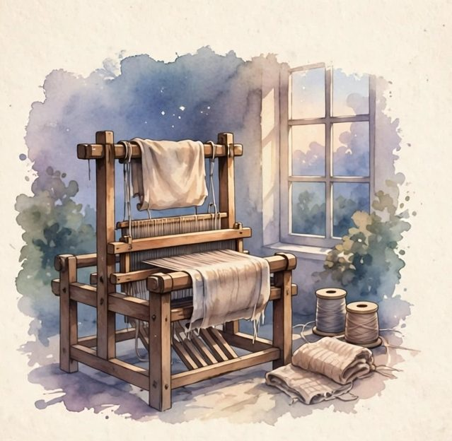
A weaver's wooden loom stands by a bright window, soft cloth resting on it.
Where the previous entry measured the dream in space, this one measures it in time. The small version may be temporal: one season of that life, lived whole but bounded — a summer given to the other work, a winter in the other town, a single term of the other study, three months in which the mornings belong to the dreamed arrangement instead of the standing one. A season is a serious size. It is long enough for the experience to stop being tourism and become, briefly, a life with weather in it; short enough that the standing life can be held, covered, lent, and returned to without being dismantled.
Seasons have an honesty that permanent arrangements sometimes lack: they end, and everyone, including the dream, knows the date. This boundedness is precisely what makes a season payable when a lifetime is not. Other people's shares can be honored for a season — the house kept, the duties covered, the farewell made with a return already on the calendar. The tenant's own fear can afford a season; it is a sum with a bottom. And the dream, given a whole season instead of a stolen hour, can show what it actually is in practice: not the brochure version, but the Tuesday version, which is the only version worth basing a life on.
The register keeps the outcomes without varnish. Some seasons end in quiet confirmation — the tenant returns home knowing the dream was true, and better for being smaller in his chest afterward, its wanting partly spent on real experience. Some end in promotion: the season argues, persuasively and from evidence, for a larger edition. And some end in gentle release, the discovery that the dream was a season's weather and not a life's climate after all. The house counts all three as successes, because all three are knowledge the tenant could not have obtained any other way. A season is the dream examined under the only light that never lies: duration.
77The Weekend Edition
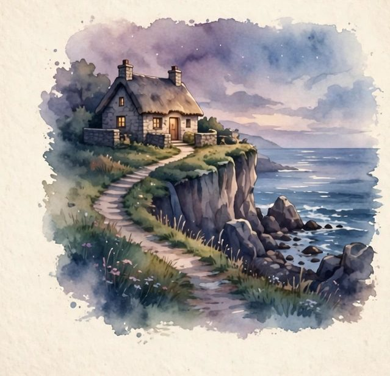
A cottage stands on a cliff top, a winding path going down to the sea.
The smallest regular unit the register keeps is the weekend edition: the dreamed life published in installments, two days in seven, on a schedule the tenant can set his calendar by. On Saturdays the other trade, the other town, the other tools come out; on Monday the standing life resumes, unthreatened and, in the files, usually improved. It is easy to dismiss this edition as a compromise, and the desk asks tenants to look again. A periodical is not a failed book. It is a different and honorable form, with its own dignity: it comes out on time, it is read with attention, and its readers — in this case the tenant himself — organize their week in its light.
What the weekend edition has, and the grander versions sometimes lack, is recurrence. The dreamed life, visited twice a week for years, stops being an elsewhere and becomes a district of the tenant's actual biography: he has a history there, skills that have genuinely grown, people who know him in that capacity, work with his name on it. The register's oldest weekend editions run to decades, and their keepers do not speak of them as rehearsals for anything. They speak of them the way a person speaks of a second home town — plainly, proprietorially, as one of the places he is from.
There is a counsel of rhythm in the entry, and the keeper makes it plainly: the weekend edition works because it is kept when it is not convenient, the way all real editions are. Missed for a busy month, it is easily missed for a season, and the dream learns once again that its slot in the calendar is decorative. Kept through the inconvenient weekends — the tired ones, the weather-beaten ones — it acquires the one property the imagined life never has: reliability. The tenant stops asking whether the dream is real. He has a subscription, and it arrives.
78The Skill, Learned Badly at First
Many dreamed lives are, at their core, a pair of skilled hands: the other self plays, builds, throws, carves, bakes, sails, speaks the other language like a native of it. The reality admitted to this hall is plainer: every small version of a skill begins in clumsiness. The first pots slump, the first scales limp, the first sentences come out like furniture assembled by guesswork, and the gap between the fluent ghost and the fumbling beginner is the exact place where most tenants quietly close the door. The register wishes to record, formally, that the clumsiness is not evidence against the dream. It is the door the dream has always had, and everyone who ever entered went through it at the same unflattering angle.
Badly at first deserves its defense, because it carries information no other stage provides. The beginner learns within a month whether the wanting was for the activity itself — its actual hours, its actual frustrations, the smell of the workshop and the ache in the shoulders — or only for the portrait of himself performing it. Both answers are valuable, and neither is available from the corridor. The tenant whose badly learned skill still draws him back on tired evenings has learned something about his dream that thirty years of imagining could not tell him. The one who sets the tools down, honestly and without self-contempt, has learned something of equal weight, and the house enters both findings in the same respectful hand.
The keeper adds the entry's kindly arithmetic. Fluency is not the price of admission; it is the interest paid on persistence, and the early rate is deliberately humbling for everyone — the ghost's fluency was edited, remember, by the same imagination that edits everything in his favor. The tenant who begins badly has not fallen behind the other self. He has overtaken him, in the only respect that finally matters: the other self, for all his polish, has never actually done the thing once. The beginner, however badly, has done it today.
79The Garden on a Windowsill
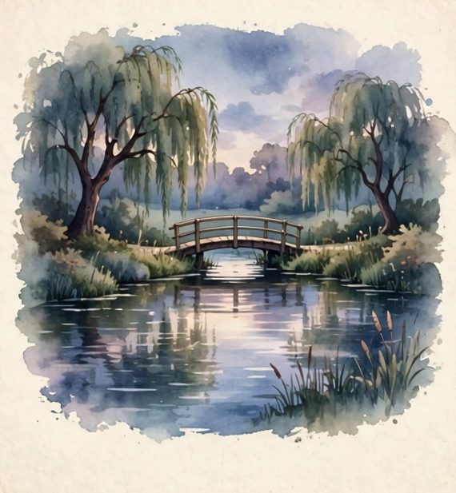
A still pond is crossed by a small wooden bridge, willow trees soft at evening.
The house keeps an emblem for this hall, and it is not grand: a windowsill of herbs above a kitchen sink, in ordinary light. Behind it stands the whole dream of land — the acres, the orchard rows, the farm at the end of the lane that the tenant has walked in imagination for forty years. The windowsill is not the farm, and the register does not insult the tenant by claiming otherwise. But it is farming: soil under the nails, a season obeyed, patience practiced daily, something green answering care with growth. The emblem stands in the hall because it poses, in miniature, the question this whole series of entries exists to ask: what, exactly, was being wanted — the acreage, or the tending.
For many tenants the honest answer is the tending, and the discovery rearranges decades. The dream of land turns out to have been a dream of a relationship — with weather, with slowness, with living things that respond to attention on their own schedule and no other. That relationship is available at the scale of a windowsill, a balcony, a borrowed corner of a community plot, and it is not a metaphor for the real relationship. It is the real relationship, at its minimum viable acreage, with real failures, real seasons, and real harvests measured in handfuls.
The emblem has a second lesson, which the keeper enters without softening it: the windowsill also tests the dream's sincerity cheaply. Herbs neglected die at the same rate on a sill as on an estate. A tenant who cannot keep basil alive through August has learned something true about the farm dream, at the cost of a pot rather than a mortgage — and the house counts that, too, as the small version succeeding, because its purpose was never to flatter the dream. It was to let the dream be met at a scale where everyone can afford the truth about it.
80The Small Version Is Not a Consolation
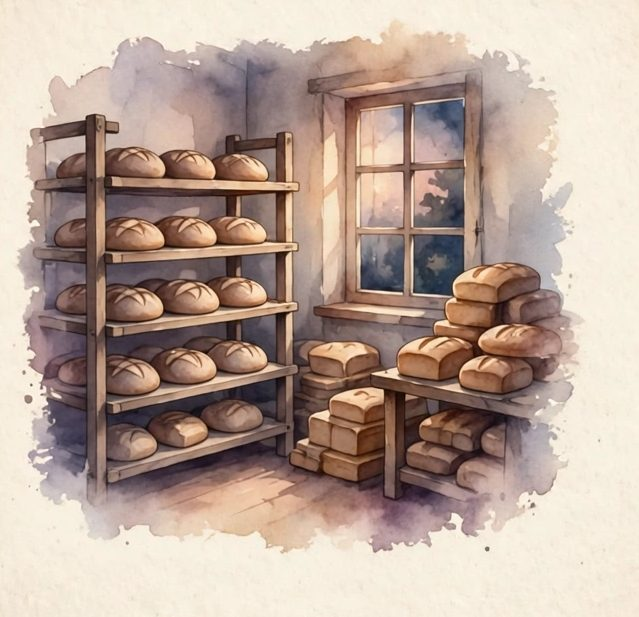
Wooden baker's racks hold plain round loaves beside a window in warm light.
The hall of the small version closes by correcting its most persistent misreading, entered here in the keeper's own hand: the small version is not a consolation. Consolation is what is offered for a loss — a kind word at the graveside of a hope, a lesser thing handed over because the real thing is gone. Nothing in these entries has died. The dream stands where it always stood, entire and unharmed, and beside it now stands something it never had before: a piece of itself, lived. To call that a consolation is to misunderstand both the dream and the arithmetic of a life, and the house declines, on the record, to use the word.
The evidence in the files supports the correction. Tenants who live a small true version do not report feeling consoled, pitied, or managed; the emotional register of their entries is entirely different. They report feeling accompanied — the dream walking beside the life instead of waiting at the end of it like an examiner. They report the peculiar satisfaction of the thing itself, done at real scale, in real weather, by their real hands. And they report, often with surprise, that the whole version's glow in the corridor has softened — not because it was exposed as false, but because it is no longer carrying the entire wanting alone.
Let the entry therefore stand as the doctrine of the hall, stated once and plainly: a dream kept at the scale a life can honestly hold is the dream honored, not the dream diminished. Size was never the measure of fidelity. The tenants who loved their dreamed lives best, in the register's long account, are not the ones who preserved them untouched at full size in the dark. They are the ones who brought them into the light at whatever size the season allowed — an hour, a room, a season, a windowsill — and kept them there, growing, in the weather of an actual life.
81Testing the Water of a Life
There is a way of meeting the dreamed life that asks nothing of the life already lived, and the house recommends it before every larger step. It is the test of the water: a toe, not a plunge. One afternoon standing in the rented studio. One morning walking the street of the city never moved to, coffee in hand, no announcement made to anyone. The dreamed life, approached this way, stops being a climate and becomes a temperature — something the skin can actually report on, rather than something the imagination has been describing, unsupervised, for years.
What the test usually finds is neither paradise nor fraud, and that is precisely its kindness. The water is colder than the brochure and warmer than the fear. Some part of the dream dissolves on contact — the light is ordinary, the work is work — and some part of it holds, quietly and completely, and feels less like a fantasy than like a fact that had been waiting. Both findings are information. Neither is a verdict. The register records the temperature without commentary, the way a careful house records the weather, because weather noted honestly is worth more than weather argued about.
No one is obliged to enter the water further, and the house is firm on this point. A test is not the first instalment of a commitment; it is a courtesy visit, and courtesy visits may end at the door with thanks. The person who has stood once in the dreamed life's shallows and walked home content has not failed anything. They know something now that the untested dreamer does not, and the knowing itself — calm, firsthand, unborrowed — is the whole purpose of the exercise, whatever it later decides.
82What the Small Version Teaches
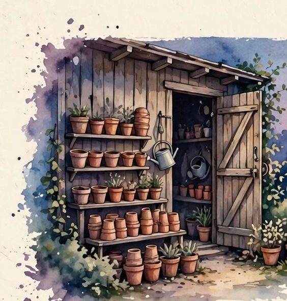
A gardener's potting shed with rows of terracotta pots and a wooden door standing ajar.
The small version, once tried, turns out to be a stricter and better teacher than the dream itself ever was. The dream, kept at full size and at a distance, could promise everything and specify nothing. The small version specifies. The rented shed teaches how the back actually feels after an hour among the pots. The single season of evening classes teaches whether the wanting was for the skill or only for the picture of having it. What survives contact with the real, at small scale, is the dream's true curriculum, and it is usually shorter and plainer than the syllabus the imagination had printed.
It also teaches the difference between the dream's furniture and its load-bearing walls. Many a grand version is carried almost entirely by one modest element — the quiet mornings, say, or the work done with the hands, or the town where nobody is in a hurry — while the rest was decoration added by years of retelling. The small version cannot afford decoration. What it keeps, it keeps because it is needed. The register notes this finding with respect, because a dream reduced to its essentials is not diminished. It is clarified, the way a garden is clarified by winter.
A third lesson arrives more slowly, and the house considers it the most valuable. The small version teaches the size of the wanting itself. Sometimes the lesson is that the hunger was real and remains. Sometimes it is that a single honest taste satisfied something that a decade of longing could not, and the dream can now rest at a lower volume, like a song heard properly at last. Either lesson is a form of accuracy, and accuracy about one's own wanting is the rarest furnishing this house knows. The dream, taught by its small version, becomes easier to keep — and easier to keep kindly.
83Small, Real, and Mine
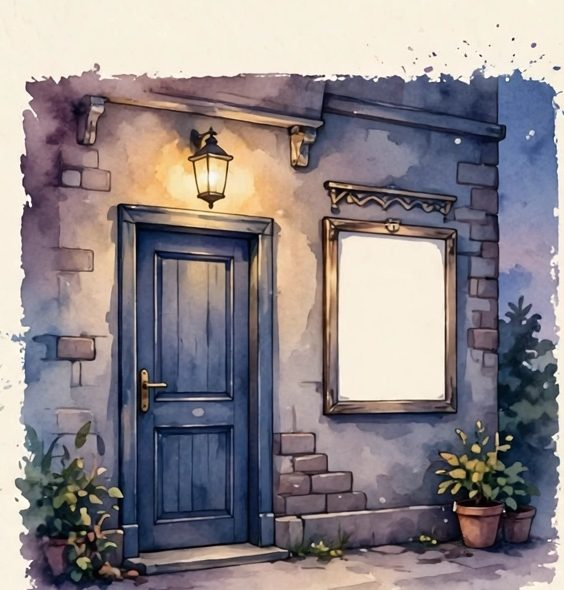
The side door of a small theater with a single lit lantern above a blank poster frame.
There comes a point in the keeping of a small version when it stops feeling like an excerpt and starts feeling like a possession. The side door of the little theater, the lantern nobody famous will ever stand under — these are not the famous stage, and the house makes no claim that they are. But they are entered weekly, in real weather, by a real person whose name is on no poster. The small version at this stage has acquired the one quality the grand dream never had: it has a history. It has been rained on. It has regulars. It has a key that sticks in cold weather, and the sticking is known, and forgiven, and part of the place.
The register is careful with the word mine, because it is easily misunderstood. Mine does not mean owned against others, or defended, or displayed. It means inhabited. The small version is the part of the dreamed life that has moved from the conditional tense into the present one: not the life that would be lived if everything changed, but the hour that is lived, in fact, every Thursday. Grammar matters to this house. A dream in the conditional is a story. A practice in the present tense is a life, however small its square footage.
And the house notes, without surprise, that small and real and mine tends to quiet the old ache rather than sharpen it. The grand version used to stand across the street of the mind like a lit house one could never enter. Now there is a door of one's own, lamplit, unremarkable, open on the evenings it is open. The rest of the dreamed life has not been cancelled; it has been given an address where it can be visited. What is visited regularly is grieved less, and wanted more cleanly — as a place, not as a reproach.
84A Door Ajar, Not Open
The hall of the small version ends, fittingly, not with a door thrown wide but with a door ajar. The house distrusts the thrown-wide door as an image for a life. It suggests a single dramatic hour in which everything is decided, and it leaves the house draughty ever after. A door ajar is a different arrangement entirely: a standing invitation, sized to the season. It says the dreamed life is neither locked away nor moved into. It can be looked through. It can be entered for an hour and left in good order. It admits light in both directions, which is more than can be said for most doors in most lives.
Keeping a door ajar is also, the register observes, a skill rather than an event. Doors drift shut on their own; hinges rust toward one position or the other, and the extremes — sealed or gaping — are both easier than the middle. The middle takes a hand now and then: the standing arrangement renewed, the hour defended without drama, the visit made even when the week argues against it. This quiet maintenance is the unglamorous heart of the whole house, and the Keeper lists it without apology. Most lasting things are mostly maintenance, tended at dusk, unphotographed.
What the visitor is asked to take from this hall is only the permission of proportion. The dreamed life does not have to be moved into to be honored, and it does not have to be renounced to be kept in proportion. Between those two exhausting ceremonies stands the ajar door, lamplit, ordinary, swinging a little in the evening air. The house keeps several such doors, and checks them on its rounds, and finds them sufficient. Some evenings nothing passes through them at all but light, and the register still counts those evenings as the arrangement working exactly as intended.
85Telling Someone
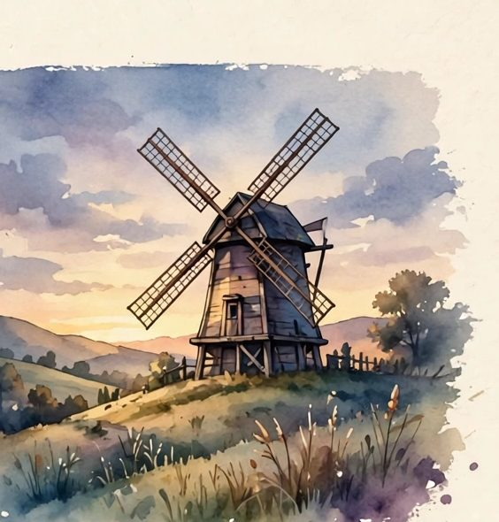
An old windmill on a hilltop at sunset, its sails still against a wide and quiet sky.
Every secret kept long enough begins to consider the question of a witness, and the dreamed life is no exception. The house opens its hall of telling with a plain observation: a dream carried alone for decades grows heavier in a particular way, not because it is shameful, but because weight shared is the only kind of weight that minds were built to carry in company. The windmill on the hill has stood alone against the sky for a century, and it is a fine sight, and it has also never once been asked how it is doing. The dreamed life, untested by any other ear, can come to resemble it — picturesque, upright, and entirely unconsulted.
Telling, as this house uses the word, is a small and specific act. It is not an announcement, not a confession, and not the first step of a campaign. It is one person, chosen with care, hearing the plain sentence once: there is a life I sometimes dream about, and it looks like this. Nothing is asked of the listener beyond listening. No verdict is requested, no help recruited, no promise extracted. The sentence is set down between two people the way a heavy bag is set down at a rest stop — briefly, gratefully, and without any implication about the rest of the journey.
The house is equally plain about the other direction. Telling is offered here, never prescribed. Some dreams are told within the year; some are told once, at eighty, to one person; some are never told at all and are none the worse kept for it, as a later room in this hall will argue at length. The door of this hall opens both ways, and the Keeper keeps it oiled. What matters is that the choice be a choice — made by the keeper of the dream, in daylight, and not made by default, out of a fear that was never examined.
86The First Telling
A row of colorful painted doors along a quiet street at dusk, the lamps just lit.
The first telling rarely happens on the grand occasion reserved for it in the imagination. It happens on an ordinary walk, past ordinary doors, when the conversation turns a corner and the sentence is suddenly there, available, like a side street one has passed a hundred times and never taken. The register has collected enough accounts to generalize: the moment is almost never announced in advance, even to the teller. The dream, kept so privately for so long, apparently prefers to leave the house the way cats do — quietly, at dusk, when nobody is making a ceremony of the door.
What surprises most first tellers is the smallness of the event as measured from outside. The listener says, oh — or really — or asks one question, and the lamps along the street stay lit and the evening continues. Nothing in the architecture of the friendship rearranges itself before one's eyes. The earthquake the imagination had forecast turns out to have been a forecast about magnitude, not about damage: inside the teller, the ground genuinely moves; outside, a door on the street has simply been pointed out, perhaps for the first time, as one's own.
The house counsels one thing about the first telling, and it is about the morning after. The teller will be tempted to audit it — to re-read the listener's face for signs of judgment, amusement, or pity, and to find whichever sign the audit went looking for. The register advises against the audit. A first telling is not a performance and does not get a review. It is a delivery: the sentence arrived at its address. What the listener makes of it over the following weeks is their own correspondence, and it usually arrives in a kinder form than the audit predicted — or does not arrive, which is also a complete and acceptable outcome.
87Choosing the Listener
If telling has one craft, it is the choosing of the listener, and the house treats the choosing as seriously as the telling itself. The right listener is not necessarily the closest person. Closeness carries its own weather: the dearest people are often stakeholders in the lived life, and a dream laid on the table can sound to them, unfairly but understandably, like a comment on the life they share with the teller. The register's records suggest the best first listeners are frequently one ring further out — the old friend in another city, the former colleague, the person whose own life is settled enough that another person's dream casts no shadow across it.
The qualities to choose for are plain ones. A listener who can hear a thing without fixing it. A listener who does not immediately reach for advice, introductions, or a five-year plan. A listener whose first instinct is a question rather than a judgement, and who can let a silence stand without hurrying to fill it with reassurance. Above all, a listener with a demonstrated respect for other people's unfinished business — the sort of person who has never once repeated a story that was not theirs to repeat. The teacups on the table are a small test in themselves: this is kitchen-table news, and it should be given to someone who knows what kitchen tables are for.
The house adds one permission that tellers often need to hear stated. Choosing a listener is not a loyalty test that the unchosen have failed. The spouse, the sibling, the closest friend may simply be the wrong audience for this particular sentence at this particular season, for reasons of weather rather than worth. A dream may also be told in instalments — the existence of it to one person, the detail of it to another, years apart. The register keeps no rule of completeness. The teller remains the author of the telling, from first word to last, and may close the book at any page.
88Said Badly, Still Said
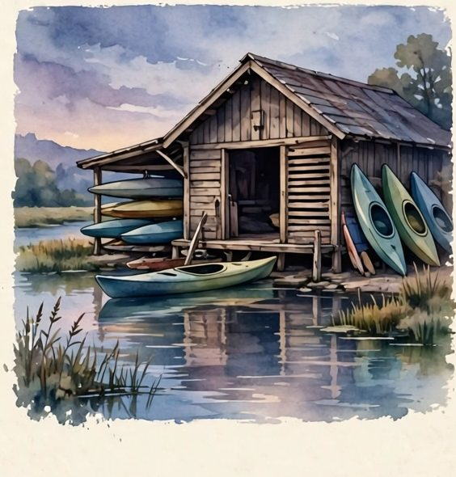
A wooden boathouse at dusk with kayaks stacked beside it on still water.
Few first tellings are delivered well, and the house has built this room to say so in advance, so that no teller mistakes a clumsy delivery for a failed one. The sentence comes out sideways. It is begun as a joke and abandoned halfway. It arrives with too much preamble, or with a laugh placed exactly where the seriousness was supposed to go. The teller, watching it wobble across the table, feels the old keeper's instinct rise — to retrieve it, qualify it, unsay it before it dries. The register's advice, earned from many such evenings, is simple: let it stand. A badly launched boat still floats. What matters is that it is in the water.
The listener, in the recorded accounts, is rarely the critic the teller fears. People are better at recognizing an awkward confidence than at receiving a polished one; the stumble itself certifies that the cargo is real. Indeed, the house suspects that a too-fluent telling can miscarry in the opposite direction, sounding like a speech the listener is expected to applaud rather than a truth they are trusted to hold. The kayaks rest upside down on their racks with their hulls to the sky, ungainly and entirely seaworthy. The telling is permitted the same dignity. Ungainly is not the opposite of seaworthy.
What the badly said telling still accomplishes is everything the well said one does. The dream now exists in two minds instead of one. The secret's long arithmetic — one keeper, no witnesses, decades — has been permanently revised. The teller can revise the wording later, and often does, in a message the next week: what I meant was. Listeners accept revisions gracefully; they are fluent in the language of having meant something. The register records the first version without embarrassment and the revision without triumph. Between the two, the dream has been said, which was the whole assignment.
89The Relief of One Witness
A snow-covered path to a cabin, lanterns glowing along the way at blue dusk.
Those who have told describe the aftermath with a consistency that the house finds worth recording: the relief is out of proportion to the event, and it arrives quietly. Nothing has changed in the lived life. The dream has not been approved, funded, or scheduled. And yet the path home feels different — lit at intervals, the way the path to the cabin is lit, by small lanterns that do not pretend to be the sun. One witness turns out to be load-bearing. The secret, which had required constant low-level holding, like a note sustained for years, can finally be rested in places, because somebody else now knows the tune.
The register offers an explanation for the disproportion, while labeling it as only an explanation. A secret kept alone must be kept twice: the thing itself, and the keeping of it, and the second labor is the tiring one. It is the labor of steering conversations away, of filing the wanting under other names, of being the sole clerk of an archive that matters. One witness retires the second labor entirely. The dream can go back to being a dream — visited, enjoyed, weighed — instead of a custody arrangement. What the teller feels, walking the lit path, is not the dream coming true. It is the custody ending.
The house notes one further feature of the relief, because tellers report it so often and trust it so little: the lived life looks better afterward, not worse. The feared arithmetic — that admitting the dream would sour the actual days — runs, in the accounts, in reverse. The days stand up straighter for not being silently compared against an unspoken alternative. The comparison was never the problem. The silence was the arena in which the comparison could not lose. One witness, one lantern, and the path is just a path again, walked at blue dusk toward a lit door, by a person carrying one less thing.
90When the Listener Laughs
It happens, and the house refuses to pretend otherwise: the sentence is delivered, and the listener laughs. Not always cruelly — often it is surprise, or nerves, or the laugh of a person who has been handed something heavier than the conversation had led them to expect. But the teller's ear does not perform this analysis in the moment. The laugh lands as the verdict the secret had feared for twenty years, delivered in one second. The curtains lift in the evening breeze, the room is suddenly all air and exposure, and the teller wishes the window — and the mouth — had stayed shut.
The register's counsel for this room begins with a distinction the moment itself cannot make: between the laugh that dismisses and the laugh that startles. The startled laugh is over in a breath and is usually followed, in the recorded accounts, by the listener's own repair — wait, no, tell me properly. It deserves the chance to be followed. The dismissive laugh is rarer and is data of a different kind: not data about the dream, which remains exactly as true as it was at breakfast, but data about the listener, whose tenure as witness may simply end there, without ceremony and without a scene. A witness can be retired. The dream cannot be un-told, and need not be defended.
What survives the laugh, in every account the house keeps, is the teller. The anticipated consequence — that the dream would die of exposure, or the teller of embarrassment — does not occur. Embarrassment has a half-life of about a day. The dream, aired once even badly, has a way of behaving like the room with the open window: fresher afterward, whatever the weather was. The house does not promise that every telling will be well received. It promises only what the records support — that a telling survived is a telling completed, and that the breeze, once let in, is rarely regretted by the room.
The Dream Desk
One desk receives all correspondence for this house — questions, corrections, and word of any life a visitor secretly dreams about: where it hides, its detail, its price, its small version. It is read in the order it arrives, and in confidence.
91When the Listener Shares Theirs
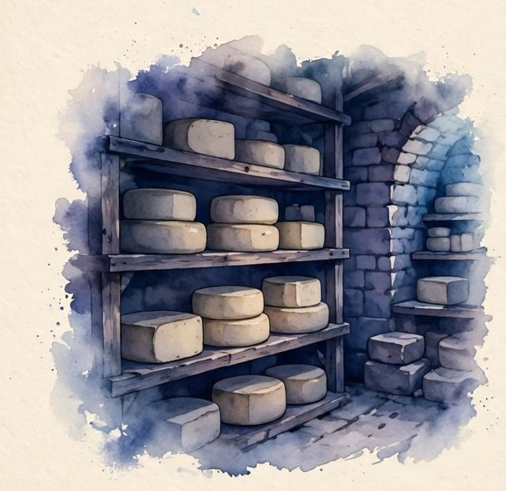
Cellar shelves holding large plain wheels of cheese in the cool dim light.
The happiest accident in the whole archive of tellings is the return confidence: the pause, the changed expression, and then the listener saying — since we are telling things — and producing a dreamed life of their own, carried just as long, kept just as quietly. The house treats this moment with ceremony in the register, because it confirms the doctrine of an earlier hall in the only way doctrine is ever really confirmed: by experience. Everyone keeps one. The listener was never the exception the teller feared being. They were a fellow keeper, waiting, perhaps for years, for exactly this permit.
What is exchanged in such an hour is not plans, and it is rarely advice. It is closer to what happens in the cellar where the cheeses age: two slow things, kept in the dark at their own pace, brought briefly into the same light and found to be ripening on similar schedules. The dreams may be wildly unlike — a boathouse against a bakery, a stage against a silence — and the likeness is not in the content. It is in the tense. Both are spoken in the grammar of the unlived, and hearing one's own grammar in another mouth is a relief no amount of solitary keeping can supply.
The house adds a gentle warning to this happy room, because the register shows the failure mode clearly. A shared confidence can curdle into a competition of longing, or into a pact neither party intended — a mutual promise to be braver than either life currently allows. The dreams were not told in order to enlist. The listener's dream belongs to the listener, with its own costs and seasons, and the teller's only office is the one so recently enjoyed: to witness, to ask one good question, and to keep the thing in confidence as carefully as it was given. Two cellars, side by side, each with its own door.
92Telling Is Not a Contract
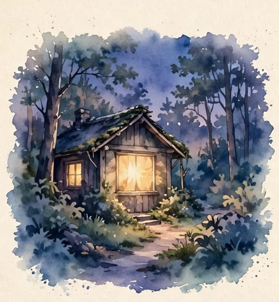
A small studio cabin in a forest clearing with a large window glowing at dusk.
A fear attends the threshold of telling so reliably that the house gives it its own room: the fear that to say the dream aloud is to sign for it. As if the words were a form, and the listener a witness in the legal sense, and the signer now obliged — to pursue the whole version, to report progress, to explain, at every meeting, why the cabin in the clearing is still only a cabin in a sentence. Under this fear, silence looks prudent. If nothing is said, nothing can be held against the silence. The house understands the logic and rejects the premise on which it stands.
A telling is a description, not a deed. It transfers nothing but knowledge. The listener receives the fact of the dream, not a share in it, and acquires no rights over its future — no right to updates, to explanations, to disappointment. The teller, for their part, has promised nothing except honesty in the moment of the telling. If the dream changes next year, or rests for a decade, or is quietly retired at seventy with thanks, the telling stands unamended and no breach has occurred. Contracts bind the future. Confidences only illuminate the present, and the register keeps the two instruments in separate drawers for good reason.
This freedom, stated plainly, turns out to be what makes telling possible at all. Most long-kept dreams would never survive a contract; they are too weather-dependent, too entangled with other people's lives, too properly undecided. But a description — that can be risked. The window of the studio cabin glows at dusk, and the glow obliges the forest to nothing. It simply shows that someone is in there, living the lit hour. The teller is asked to remember that a lit window is not a signed lease. It is only light, and light is allowed to be only light.
93The Dream Survives Being Heard
Underneath the fear of laughter and the fear of contracts lies the oldest fear of all, and the one the house hears most often in lowered voices: that the dream, once spoken, will spoil. That it was alive precisely because it was sealed — like the envelope on the desk — and that opening it to another person's hearing will let the life out of it, the way a scent escapes a bottle. The teller imagines the dream afterward: thinner, common, somehow used. Why risk the one intact thing on the uncertain mercy of daylight and other people's faces.
The records of this house, kept across many tellings, report the opposite with unusual unanimity. The dream survives being heard. It survives it the way a melody survives being hummed by a second person — which is to say, unchanged in itself and doubled in the world. What sometimes does not survive is a particular varnish: the dream's loneliness, its quality of being the one thing nobody knows. Some keepers grieve that varnish for an evening. Most report, by the week's end, that the dream underneath is the same size as before, and warmer to the touch, like a room someone else has finally sat in.
The house therefore enters this finding as a standing correction to the imagination's bookkeeping. Secrecy was never the dream's life-support. It was only its storage conditions — and plenty of good things keep better in the open air. The map stays folded on the desk; the journey is not cancelled by being described. If anything, the tellings in the archive suggest the reverse bookkeeping: a dream never aired runs the greater risk, the risk of going quietly stale in its envelope, until one day the keeper opens it and finds the ink faded past reading. Heard in time, it keeps.
94Kept Secret, Kept Well — Also Allowed
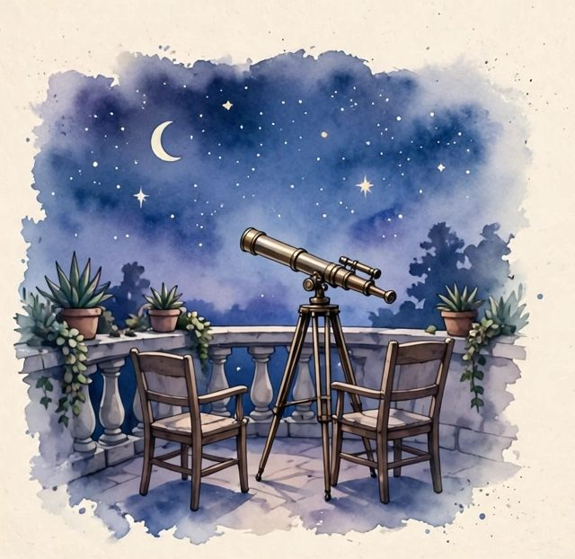
A terrace with a telescope and two empty chairs under a starry sky.
This room exists so that the hall of telling cannot be misread as a hall of obligation. After nine rooms in praise of the witness, the house states its counter-doctrine in full: a dream may be kept secret for an entire life, and kept well, and the keeping is not a lesser path. The telescope stands on the terrace under the stars, and the chairs beside it are empty, and the observation being made is no less real for having no audience. Some dreams are, by their nature, solitary instruments. They are looked through alone, at night, and put away before morning, and that is their correct use.
Kept well is the operative phrase, and the house defines it by its opposite. A secret kept badly is one kept in fear — flinched at, apologized for inwardly, treated as evidence against the keeper. A secret kept well is tended like the instrument it is: taken out deliberately, enjoyed on its own terms, stored with care rather than buried with shame. The difference is visible from inside a life. The badly kept secret costs rent every day. The well kept one pays a small quiet dividend — a private north, a direction known only to the one steering, in a world that demands every heading be filed in advance.
So the register closes the question this hall has been circling. Telling is a door, and doors in this house open from the inside, at the keeper's hour, or stay shut at the keeper's pleasure. The person who dies at ninety with the dream undisclosed and unforgotten has not failed the dream, and the dream has not failed them. They kept each other, privately, for a lifetime — which is one of the oldest arrangements between a person and a star. The two chairs on the terrace are empty by choice. The sky, unbothered, is full.
95What Changes After Telling
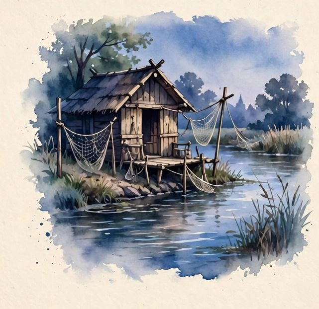
A fishing hut on a riverbank with nets hanging to dry in the evening light.
For honesty's sake, the house keeps a room for the morning after, because telling does change things — only not the things the imagination forecast. The friendship is not ruined and the life is not reorganized. What changes is more modest and more durable. The dream now has a second address. In future conversations it can be referred to in shorthand — the boathouse, the Turin idea, the other thing — the way the nets hang by the hut, in the open, drying in ordinary air. A thing that can be mentioned casually has been demoted from a state secret to a piece of biography, and the demotion is a relief every single time.
The teller changes, too, in one specific faculty: the dream becomes speakable-to-self in a new register. Having once found the words for another person, the keeper discovers the words now exist at home as well, and the inner monologue about the dream grows plainer and less theatrical. It can be discussed at the Dream Desk like any other item of house business — its season, its small version, its cost this year — rather than approached like weather in a shrine. The house considers this the deepest change of all, and the least predicted: the first witness turns out to have been an interpreter, translating the dream into a language its own keeper can finally use.
And one thing, the register insists, does not change. The telling creates no momentum that must be obeyed. Some tellers, flush with the new ease, mistake it for an instruction and begin apologizing for the dream's continued rest, as if rest were now a public broken promise. It is not. The nets dry; the river continues; the hut keeps its hours. The dream after telling is exactly as free as the dream before telling — to advance, to wait, to alter, to retire — with the single difference that it now does its waiting in the company of one more person who knows. That is all. In this house, that is plenty.
96One Witness Is Enough
The hall of telling closes against a modern temptation: the idea that a thing is only real once it has been widely shared. The dreamed life, told to one person, is sometimes then treated by its own keeper as a draft awaiting a larger audience — as if the telling were incomplete until it has been made at a gathering, or posted, or turned into the family's official knowledge. The house resists this arithmetic firmly. One window lit in the house at dusk is not a partial lighting of the house. It is a room in use. One witness is not a rehearsal for witnesses. It is the completed act, at its correct scale.
The arithmetic of confidence is not cumulative in the way of applause. A second witness adds a second relationship to the dream, not a second unit of relief; the first telling does nearly all the work, because it breaks the seal that did the damage — the seal of nobody knows. After that, each further telling is a choice about particular people, to be made or not made on its own merits, in its own season. Some dreams in this archive are known to exactly one person after forty years, and the register records those entries without any note of deficiency. The account is settled. The seal is broken. The rest is correspondence, optional and unhurried.
So the visitor leaves this hall by the same door the house keeps for every large subject: the door of enough. Enough is an unfashionable measure and the foundation of this entire building. A small version, honestly held, is enough of the dream to live with. A single hour is enough of a beginning. And one listener, chosen with care and trusted with the plain sentence, is enough of an audience for a life's quietest fact. The window stays lit as long as it stays lit. The house does not count the street's opinion of the light. It counts the room, and the room is warm.
97Step One: Name the Dream in One Sentence
A herb garden in raised wooden beds with a stone sundial standing in the middle.
The twelve steps begin where all keeping in this house begins: with a name, spoken plainly, in a single sentence. Not a plan, not a pitch, not the whole geography of the dreamed life — one sentence, of the length that fits on the sundial's face. The life I secretly dream about is a small house above a harbor where I mend boats. The life I secretly dream about is a stage, and my name spoken kindly by strangers. Most keepers have carried the dream for decades without once requiring it to fit into one sentence, and the fitting is the step. Everything that cannot fit is, for now, decoration; the sentence is the beam the rest will hang from.
The sentence should be written, the house advises, in the present tense and the plainest available words. Adjectives are where dreams hide from their keepers; verbs are where they stand still to be counted. A sentence full of weather and light but empty of action usually means the dream is a place to be looked at rather than a life to be lived, which is a legitimate thing to discover and a different thing to keep. The Dream Desk keeps a drawer of first sentences, revised over the years in pencil, and the revisions are the biography of the wanting — each one truer, duller, and more load-bearing than the last.
No one is asked to show the sentence, and the step does not include telling; telling has its own step, later and optional in spirit. This step is between the keeper and the register only. Say it once, aloud or on paper, and let the small shock of its plainness settle. A dream that has survived being reduced to one honest sentence has passed its first examination, and it usually looks back at its keeper, from the page, with something like relief — as if it, too, had been waiting all these years to be introduced properly, by name, at last.
98Step Two: Visit It in Detail
A tower room where a narrow staircase winds between shelves of plain blank books.
With the dream named, the second step is a visit — not a decision, not a reconnaissance for purchase, but a proper visit, made in the imagination slowly and in detail. The house compares it to climbing the tower stairs past shelves of blank books: the story is not written anywhere, so the visitor must supply it, floor by floor. What does the morning of the dreamed life actually contain. Where is the kettle. What is done with the hands before noon, and what has been quietly omitted from every previous telling of the dream — the bills, the weather in February, the part of the work that is only work.
Detail is this house's favorite instrument, because detail is where a dream confesses what it is made of. Vague dreams are almost always photographs: a light, a coastline, a feeling of arrival with no Tuesday attached. Detailed dreams have Tuesdays. The visitor is asked to spend the imagined day all the way through to its evening, and to note, without disappointment, the hours where the dream goes ordinary — because the ordinary hours are the tell. If the dream remains kind at four in the afternoon of an imagined rainy Thursday, it is made of stronger material than most. If it evaporates by lunch, the register wants that recorded too, gently and without a verdict.
The visit may be repeated; indeed it should be, across seasons, the way a real place is revisited and found changed by weather and by the visitor. Each visit, the blank books fill a little. The keeper is not building an escape plan on these stairs. The keeper is doing something more modest and more useful: learning the actual shape of the wanting, in its own rooms, at its own pace — knowledge without which every later step, the asking and the costing and the small version, would be arithmetic performed on a fog.
99Step Three: Ask What It Asks
The third step is a question, put to the dream directly and then left alone long enough to be answered: what are you actually asking for. The house insists on the asking because a dream unconsulted tends to be misquoted by its own keeper. The misquotation usually inflates. The keeper reports that the dream demands a different country, a different trade, a different life entire — when the dream, asked properly, might have been requesting one unhurried morning a week, or the use of the hands, or to be spoken of without irony. The notebook lies open at this step, and the pencil is laid down as often as it is taken up. Answers of this kind arrive at walking pace.
It helps, the register suggests, to ask the question in its smaller forms. What does the dream ask for this year. What does it ask that costs no money. What does it ask that involves no other person's permission. The answers sort themselves, with surprising docility, into the near and the far — and the near pile is almost always larger than the keeper expected. This is the discovery the whole staircase is built to reach: the dream's demands, examined one by one, are mostly modest, and the one immodest demand standing among them can be looked at steadily once it is no longer carrying the others on its back.
The step ends without obedience. Asking what the dream asks is not agreeing to provide it; it is correspondence, not contract, and the house has already ruled on that distinction. Some asks will be met, in part, in season. Some will be declined with thanks. Some will be kept on the page, in pencil, for a year in which the life has more room. The notebook closes on all of them without resentment. A dream that has been asked, and heard, and answered honestly — even when the answer is not yet, or not that part — behaves differently afterward. It knocks less like a creditor and more like a neighbor.
100Step Four: Count the Cost Without Drama
A cartographer's wooden table with an abstract map of lines and coasts, no words on it, and a brass compass beside it.
The fourth step is the ledger step, and the house asks that it be done at a table, in figures, in daylight — the way the cartographer works, with the coastlines drawn as they are and not as they are feared to be. Every version of the dreamed life has a price, and the step is simply to write the price down: the money, in actual numbers; the time, in actual hours; the other people's shares, named honestly; the parts of the present life that would have to be given up, listed without adjectives. Drama is the only thing banned from this table. Drama inflates prices in both directions — making the dream ruinous, or making it free — and both inflations are kinds of lying.
Count also, on the facing page, the cost of the present arrangement, which the earlier halls have priced in full: the rent the secret charges, the interest on decades of deferral, the small daily tax of the comparison. A ledger with only one column filled is not a ledger; it is an argument. The house has seen too many keepers count the dream's price to the last coin while carrying the status quo as costless, when the status quo has been billing them quietly for years. Both columns, both totals, in the same hand and the same light — that is the whole method, and it is enough to change the temperature of the subject permanently.
The step ends, deliberately, without a purchase. Counting is not committing, and the register underlines this because frightened keepers skip the counting precisely to avoid the commitment they imagine follows it. It does not follow. What follows is only knowledge: the map with its coasts in their true places, the compass resting beside it, unused for now. Many keepers find, at this table, that the feared figure was never the real one, and that the real one — smaller, specific, payable in instalments of hours — deserves a different emotion than dread. The house supplies the table and the light. The arithmetic belongs to the keeper.
101Step Five: Find the Small Version
A lighthouse beam sweeping over a calm dark sea at night.
The fifth step is the search the whole house exists to assist: finding the small version. The method is subtraction with respect. Take the named dream, with its sentence from the first step and its details from the second, and ask what its smallest honest form would be — the form that keeps the beam and drops the lighthouse. Not a symbol of the dream, not a souvenir of it, but the dream itself at reduced scale: the same work, the same mornings, the same use of the hands, in one room, one season, one day a week. The register's experience is that every large dream contains such a form, the way every coast contains a cove.
The search has one strict rule, and the house enforces it kindly: the small version must be real. A photograph of the place is not the small version. A course about the work, watched from a chair, is at best a neighbor of it. The small version must involve the body, the calendar, and at least a little weather — the keeper actually there, doing the actual thing, at whatever scale the present life can honestly hold. Size is negotiable; reality is not. A single herb bed is a real garden. A watched garden, however beautifully filmed, is a window, and the house already has a hall about windows.
Expect the search to take longer than the finding deserves, because the imagination resists scale the way the eye resists a dim room — briefly, and then with gratitude. Write the candidates down without ranking them. The right small version usually announces itself by a particular quality the register has learned to trust: it frightens the keeper slightly less than it attracts them, and it fits inside the existing life without requiring anyone else in that life to be consulted, deceived, or displaced. When such a form is found, the step is complete. Nothing has been done yet. Everything, quietly, has become doable.
102Step Six: Try the Small Version Once
The sixth step is the smallest on the staircase and the one most often postponed, so the house states it with unusual plainness: try the small version once. Once means once. Not a course of ten sessions, not a subscription, not a new identity with equipment. One rental of the studio. One market day with the stall. One weekend in the harbor town, mending nothing, only walking the quay at working hours to see if the wanting survives the smell of the place. The step is sized like the plant on the windowsill — a beginning that can be carried in one hand, and watered, or not, after honest inspection.
One trial yields the only evidence this subject ever produces: evidence. Before it, the keeper knows the dream's literature by heart and the dream itself not at all. After it, there is a fact in the register — the hands liked it, or did not; the hour flew, or crawled; the wanting, fed one real meal, grew quieter or clearer. The house does not predict which. It observes only that keepers who have tried once argue with themselves far less than keepers who have not, because an argument needs two uncertainties, and one of them has now been replaced by a Tuesday that actually happened.
The trial binds the keeper to nothing, and the step closes by repeating the house's standing law on the point. A disappointing trial is not a tragedy; it is the cheapest possible purchase of a large piece of truth, and the dream, honourably tested, may be honourably rested. A good trial is not a summons either. It is a door found unlocked, which the keeper may open quarterly, yearly, or at eighty. The plant on the sill does not demand to become a forest by Friday. It asks only to have been real once, in real light — and that, the register confirms, is already a different life from the one in which it was never tried.
103Step Seven: Tell One Person
A smallholding with a glass polytunnel and neat rows of green vegetables in morning light.
The seventh step stands where the staircase passes the hall of telling, and it borrows that hall's doctrine entire: choose one listener, with care, and say the plain sentence once. By this point in the steps the telling has become easier than it would have been at the start, and the reason is structural. The keeper no longer carries an abstraction into the conversation. There is a sentence now, and a visited detail, and a counted cost, and — in most cases — one small real trial standing in the record like a row of green in the polytunnel: modest, undeniable, alive. A dream with one fact in it is a far lighter thing to hand to another person than a dream made only of weather.
The step carries the hall's permissions with it, unabridged. The listener owes nothing: no help, no verdict, no remembering on schedule. The telling is a description, not a contract; it signs the teller up for nothing and the listener up for less. If the laugh comes, the house's counsel from the earlier room applies — distinguish the startled laugh from the dismissive one, retire a witness without retiring the dream. If the return confidence comes, receive it as the honor it is. The register asks only that the telling be made, like the planting, in season and without forcing: a conversation that has room in it, not an ambush at midnight.
And because this staircase is honest, the step includes its own exemption, printed in the same size as the instruction. A keeper who has weighed the telling and decided against it — whose dream is of the solitary kind, whose circumstances make a witness a genuine cost rather than a relief — may mark this step kept-secret, kept-well, and pass on with the house's full respect. The staircase does not grade its climbers. It only insists that the decision be a decision, made at the desk in daylight, rather than a default inherited from the years when the dream had no name and the keeper had no register.
104Step Eight: Let the Dream Rest a Season
A houseboat with a tiny garden of pots on its deck, moored quietly at evening.
The eighth step surprises keepers who expected the staircase to be all ascent: let the dream rest a season. Not abandoned, not concluded — rested, the way the houseboat rests at its mooring through the winter, its little deck garden cut back and mulched, present and unvisited. The house builds this step in deliberately, because a dream freshly named, visited, costed, and tried is a dream in a state of unusual excitement, and decisions made in that state — in either direction — have a poor record in the register. A season of rest is how the house separates the dream's substance from the dream's weather. What is still standing in spring was never weather.
Resting is an active arrangement, and the step specifies it so it cannot decay into mere avoidance. The dream keeps its place in the register. The small version, if it has begun, may continue at its maintenance rhythm or pause, as the keeper's life dictates. What stops is the deliberation: no re-counting of costs, no re-litigating of the sentence, no fresh verdicts solicited from the self at three in the morning. The question is tabled, formally, until a named season. Keepers report that the tabling itself is a relief second only to the telling — the dream, like a guest who has been assured of dinner, stops knocking and settles, and the house is quiet enough to hear the rest of life in.
What the season of rest returns, when it ends, is the rarest instrument in the whole building: a fresh reading, taken by a rested keeper, of a dream that has not been handled for months. Some dreams come back from their season smaller, clearly memorabilia. Some come back exactly themselves, patient as moored boats, and those the register marks with a particular respect — they have passed the only test that cannot be hurried. Either reading is trusted in a way no earlier reading could be, because it was not argued into existence. It was waited into existence, which is the house's favorite method and the one this step exists to teach.
105Step Nine: Revisit Without a Verdict
The ninth step asks for a revisiting conducted under an unusual discipline: no verdict is to be reached. The keeper returns to the dream after its season of rest — to the sentence, the details, the small version, the whole file — and reads it the way one sits on the porch above the valley in the evening: to look, not to conclude. This is harder than it sounds, and the house knows it. The mind arrives at every revisiting with a gavel already in its hand, eager to declare the dream viable or foolish, the keeper brave or deluded, and to close the file by supper. The step exists to make the mind put the gavel down and simply attend.
Attending has its own agenda, quieter and more accurate. What has changed in the dream since it was last examined — not in the keeper's opinion of it, but in the dream itself. Dreams are not statues; across a decade they quietly edit their own contents, dropping the fame and keeping the harbor, dropping the harbor and keeping the mornings. A verdict reached too early freezes the wrong edition and then judges the keeper for failing to live up to a text the dream itself has revised. The revisiting, done without judgement, catches the current edition — often gentler, often more specific, occasionally unrecognizable, and always more truthful than the archived one.
The register schedules these revisits at long intervals, a year apart or more, and records them in a hand deliberately unlike the hand of the cost-counting step. No totals are taken. The keeper writes a paragraph, dates it, and closes the book. Across several such entries, a pattern accrues that no single verdict could have supplied: the dream's biography, and the keeper's, interleaved, each correcting the other in pencil. The empty chair on the porch is not a symbol of absence. It is the seat reserved for this practice — occupied an hour a year, in the evening, by someone who has learned to look at a life without needing to sentence it.
The Dream Desk
One desk receives all correspondence for this house — questions, corrections, and word of any life a visitor secretly dreams about: where it hides, its detail, its price, its small version. It is read in the order it arrives, and in confidence.
106Step Ten: Keep What Proved True
A watchmaker's bench with small gears and tools laid out under a focused lamp.
By the tenth step, the keeper has something no amount of longing could have supplied: results. A sentence that has survived revision. Visits that have separated the furniture from the walls. A small version, tried. A season of rest, and a rested reading. The step now is curatorial: keep what proved true. Some element of the dream will have shown itself, under handling, to be genuinely load-bearing — the work with the hands, say, or the town's pace, or the company of one kind of person — and that element is to be kept the way the watchmaker keeps the true gear: cleaned, fitted, and allowed to run inside the actual life, at whatever scale the life affords.
Keeping, in this house, is a practice rather than a sentiment, and the step specifies its modest mechanics. What proved true gets a place in the calendar or the room — not a shrine, a place: the standing hour, the bench in the corner, the season that recurs. It is maintained without drama and defended without speeches. The register is particular about this because the proved-true element, once installed, tends to stop looking like the dream at all. It looks like a habit, like a Tuesday. Keepers sometimes mourn this and go hunting for the old glow in larger versions. The house advises against the hunt. The gear that runs the watch is not less the treasure for being inside the case.
The step also licenses the keeper to update the dream's official sentence, in light of what has been kept. The sentence from the first step was written in ignorance, however honest; the sentence rewritten now is written in knowledge. The harbor may have left it. The hands may have entered it. Such a revision is not a retreat from the dream but its graduation — from a picture carried since youth to a description maintained by an adult who has handled the evidence. The Dream Desk keeps both sentences, the first and the revised, filed together. The distance between them is the exact measure of what the staircase was for.
107Step Eleven: Release What Was Only Weather
A winding mountain pass road leading toward a distant small inn with lit windows at dusk.
The eleventh step is the staircase's act of tidiness: release what was only weather. Every long-kept dream accumulates elements that were never the dream itself — they were the climate of the years in which it was dreamed. The wish to be envied, gathered in a competitive decade. The wish to be elsewhere, gathered in a house that was unhappy. The fame imagined at twenty, still riding in the luggage at fifty like a coat for a country the journey no longer crosses. These elements feel like cargo and present themselves as cargo, but they were only ever weather: they passed over the dream, and the dream, examined in a clear season, does not contain them.
Releasing is done without contempt, and the house is strict about the tone. The weather was real weather; it rained on actual years, and the young keeper who dreamed of applause in a cold season is not to be mocked by the older one who no longer needs it. The release is performed the way a traveler at the pass leaves a stone at the cairn — not as rubbish discarded, but as weight acknowledged and set down, with the journey continuing lighter toward the lit windows below. The register records each released element by name, because unnamed releases have a way of climbing back into the luggage at the next hard season and presenting themselves as cargo again.
What remains after the release is the dream at its traveling weight, and keepers consistently describe the remainder with the same word: portable. The dream that survives the eleventh step can be carried in an ordinary life without special vehicles. It fits in the sentence. It fits in the calendar. It can be taken out in company or kept in a drawer, tried, rested, revisited, at the cost of hours rather than upheavals. The staircase began with a second life, enormous and sealed. It ends its practical work with something the size of a well-packed bag — and the house submits that the smaller thing is not the dream diminished. It is the dream, finally packed by its owner.
108Step Twelve: Thank the Dream for Its Service
The staircase ends, as the house believes all long services should end, with thanks — said plainly, to the dream itself, for its service. The wording matters. Service, because that is what the dream has rendered across the years: it kept a direction open in decades when direction was scarce; it held a picture of the keeper's wanting in trust when the keeper had no time to want anything; it served as compass in seasons when it could not serve as destination. None of this required the dream to come true in order to have been worth keeping. A lighthouse is not a failure for every ship that passes it safely and sails elsewhere.
The thanking is a small ceremony and the house keeps it deliberately plain, in the manner of tea poured in a garden at the end of the day. The keeper reviews, once, the whole file — the sentence and its revision, the trials and the rests, the kept gears and the released weather — and enters a closing note in the register: what the dream gave, in what years, and what it is thanked for. If the dream continues in service, as most do, the note thanks it in advance for the remainder. If the dream is retiring, the note is its discharge papers, honourable and complete, kept in the drawer where the first sentence lives.
With this step the practical staircase is done, and the keeper is returned to the ordinary keeping of the house — to the halls and rooms through which this page has walked, which remain open at all hours. Nothing about the thanks requires the dream to end, and nothing about it promises the dream a future. It is simply the house's way of keeping its accounts in the right tense: gratitude looks backward at service actually rendered, which is the one tense in which the dreamed life has always, unfailingly, delivered. The tea cools. The garden darkens kindly. The register closes on a clean page, and the dream, thanked, keeps its own hours as it always has.
109A Guide for the New Arrival
A printmaker's heavy press in a bright studio, with plain paper sheets hanging to dry.
For the visitor who has arrived at this house by accident, or by a link pressed without explanation, the Keeper keeps a short guide, and it begins with reassurance. Nothing is wanted from you here. This house does not recruit, does not judge its guests, and does not keep a list of those who leave by the first door. You have a secretly dreamed life; so does everyone the house has ever registered; the fact has been noted, with respect, and the tour may proceed at walking pace or not at all. The rooms are arranged from the secret itself, through its hiding places and costs, to its small versions and its long weather, and they may be visited in any order.
Two rules of the house are worth knowing at the threshold, because everything inside follows from them. The first is that the dreamed life is treated here as information, not indictment: its existence says something about wanting and nothing against the life actually lived, which this house regards, in all its ordinary Tuesdays, as the senior partner in every discussion. The second rule concerns proportion. The house deals in small true versions, single hours, one witness, doors ajar. Visitors looking for the whole version, dramatically and at once, will find the building strangely short of levers for pulling. That absence is architectural and entirely intentional.
The guide ends with directions to the two desks that matter. At the Dream Desk, a visitor may leave a message for the Keeper — the dream named, a question carried, a small version reported — and it will be read in the order it arrived, as all messages here are read. The register by the door is for the quieter transaction: your own notes, kept by you, in your own hand, for the revisits the later rooms describe. Take the house at the pace the print studio takes the sheet: one pass, patiently, and hung to dry before judgement. The Keeper thanks you for arriving, however you arrived, and the door behind you remains exactly as you left it — yours.
110Questions People Ask at the Desk
A walled kitchen garden gate with climbing bean plants twining over it.
Certain questions arrive at the Dream Desk so regularly that the Keeper has taken to answering them here, in the open, where the answers can be read in the garden's own time. The first is whether having such a dream means the visitor's real life has failed. It does not, and the house answers this one before the kettle boils. Nearly every life in the register is accompanied by an unlived one, including lives their owners describe, sincerely, as good. The dream is not the lived life's opposite. It is its shadow at a certain hour — proof of light, if the visitor wants the geometry of it, and the house is content to leave the geometry there.
The second question asks whether the dream should be pursued, and the desk declines it in its general form, politely and permanently. Pursuit is a decision with costs in both directions, and the house, which has never met the visitor's life, will not cosign it either way. What the desk offers instead is the staircase: name the dream, visit it, ask what it asks, count its cost, find the small version, and let the evidence accumulate. Visitors who climb it usually stop asking the general question, because they have replaced it with several particular ones, all answerable. The third question, asked more quietly, is whether it is too late. The register's answer is a matter of record: keepers have begun the staircase at every age the desk has ever served, and the small version has never once checked a birth date at the gate.
The last of the regular questions is the one asked with a glance at the door: whether anyone else feels this way, or whether the visitor is singular in keeping an unlived life behind the ordinary one. On this the desk permits itself its one broad statement. In all the years of the register, the visitor who kept no such life has not yet presented themselves. The bean plants climb the gate of every walled garden in the street, in every season, given anything at all to climb on. The visitor's garden is walled, as gardens are. What climbs inside it is ordinary, perennial, and — the Keeper adds, because it is the part most often disbelieved — entirely the visitor's own affair.
111Questions Skeptics Ask, Answered Carefully
The house keeps a chair for the skeptic, and keeps it comfortable, because the skeptic's questions are good ones and several of them built these rooms. The first arrives in a tone of concern: is all this attention to an unlived life not simply a refined way of being dissatisfied — a machinery for making contented people wistful. The Keeper answers carefully. Attention is not amplification. The dream examined tends, in the register's long record, to grow quieter and more precise, not louder; it is the unexamined dream that does the shouting, from behind its wall, in the small hours. The skeptic is invited to test the claim against any keeper who has climbed the staircase. The house rests the point there, without triumph.
The second question is harder, and it deserves its harder answer: does the house not risk consoling people out of lives they genuinely should change — teaching them to polish a small version when the honest act would be the large one. The Keeper concedes the risk exists, and answers that the house was built facing it. The doctrine states, in its foundations, that some prices are real refusals and some are not, that the ledger has two columns, and that nothing here instructs a visitor to stay. The small version is a method of inquiry before it is anything else: it returns evidence. Where the evidence says the small version is a substitute and the wanting remains entire, the register records that finding without flinching. The house keeps dreams honestly. It does not keep people in their lives; that decision was never the house's to make, and it declines the honor of being blamed for it.
The third skeptic's question is asked with a smile, and answered in kind: is this not, underneath the watercolor, an elaborate permission slip for doing nothing. The Keeper points, without heat, at the staircase — the naming, visiting, costing, trialing, resting, revisiting of a thing most people never once submit to plain attention — and suggests that nothing is an odd word for it. Doing nothing about a dream is the commonest arrangement in the world, and it requires no house, no register, and no twelve steps. What this building houses is the middle practice between nothing and everything, which turns out, when examined, to be where most honest keeping has always lived. The chair remains available. The skeptic's name, if offered, is entered in the register like any other — the house has no other kind of entry.
112What a Visitor May Take Home
A domed glass winter garden glowing at twilight among dark trees.
Every house of this kind is asked, sooner or later, what its visitors may take home, and the Keeper answers in the manner of the winter garden: nothing is cut here, and nothing is sold, but a visitor may leave warmer than they arrived, carrying things that do not show in the hands. The first of these is a sentence — their own, arrived at somewhere among the rooms: the dreamed life named in one plain line, in the present tense, with the verbs standing up. It weighs nothing. It has been known, in the register's accounts, to reorganize a keeper's whole filing system for the wanting they carry.
The second takeaway is proportion, which the house considers its principal crop. A visitor may take home the discovery that the dream asks for less than feared — an hour, a season, a skill learned badly at first — and that the small version of it is not a consolation but the thing itself at a livable scale. And the third is a permission with two ends, which the house issues in both directions at once: permission to keep the dream without pursuing it, and permission to pursue its small version without apologizing for the size. The two permissions are printed on the same card. Most visitors, the Keeper notes, needed both halves and had been issued neither, by anyone, ever.
There is also a smaller item, available at the door without ceremony: the knowledge that the register exists and is kept — that somewhere, the unlived lives of ordinary people are recorded in a fair hand, without judgement and without a sales desk attached. Visitors have described this as the actual souvenir, and the house does not argue. To know that one's quietest fact is a common entry in a well-kept book is a warmth of the winter-garden kind: not the summer of the dream fulfilled, but a lit glass room in the cold season, where something green is being kept alive on purpose. Take the warmth. It is the one thing here that improves by being carried away.
113The Unlived Life House in Ten Years
A shepherd's round stone shelter with gentle smoke rising from its chimney at dusk.
The house permits itself, in this room, one exercise it generally denies its visitors: a look forward, ten years along, at itself. The Keeper's expectation is modest and structural. The building will not be larger. Houses of this kind grow by accretion of quiet, not by extension, and the register's ambition for the decade is a thicker book rather than a bigger hall — more sentences revised in pencil, more small versions reported in from kitchens and harbors, more dreams thanked and discharged with honour at the end of long services. The stone shelter on the hill does not aspire to become a village. It aspires to still have smoke in its chimney, nightly, in all weathers.
The keepers of that future decade will arrive, the house predicts, carrying the same cargo as today's: a second life, unlived, kept behind the first. The costumes of the cargo will change — the dreamed trades and cities of one generation read as antiques to the next, and the register already holds dreams of occupations that no longer exist and of places that have since been built over. The structure underneath does not date. A person, a wanting, a wall, and the long negotiation between them: the house expects to be registering that arrangement in ten years with the same forms, and considers this stability not a failure of imagination but the definition of its trade.
One change the Keeper does allow the forecast, and enters it as a hope rather than a plan. The house hopes that in ten years the sentence it was built on — that nearly everyone keeps such a life, and that keeping one is not a betrayal of the life lived — will have become ordinary enough to bore people slightly. Doctrines that succeed become furniture. Should a visitor of that decade find the rooms unremarkable, the register will count the visit a success of the deepest kind. The shepherd does not need the shelter praised. The shelter needs to be there, dry and firelit, on the night the weather turns — for the flock, for the stranger, for whoever is still out on the hill with a life they have not lived yet, and may yet live in part.
114Every Life Has a Life It Did Not Live
In the long view, the house's whole doctrine reduces to the sentence on this room's wall, and the Keeper offers it without ornament: every life has a life it did not live. Not as tragedy. As arithmetic. A life is a path taken at walking pace through a field of paths, and the field is always wider than the walker. The other paths were real — that is what makes them worth a house. A merely fanciful alternative could be dismissed at the gate. These were genuine turnings, with genuine weather down them, declined at real crossroads by a person doing their honest best with the light available. The register honours them as turnings, not as errors.
The sentence has a second half that the first half is often quoted without, and the house insists on the pair. The unlived life is not the true life, hiding. It does not stand behind the lived one like the real house behind a facade, and the keeper who treats it that way will spoil both addresses — resenting the lived life for not being the other, and never actually arriving at the other to find it made of Tuesdays like anywhere else. The two paths cross the same meadow. Each is fully a path. The lived one has the walker's footprints on it, and birthdays, and repairs, and people; the unlived one has the light at a certain hour, and the knowledge of which way it went. Both are real. Only one was walked, and the walking is not a small thing to set against the light.
Why the house was built, then, is finally this: to give the un-walked path a keeper, so that it does not have to be either worshipped or denied. Worship makes a shrine of it and a accused of the walker. Denial makes a ghost of it, and ghosts knock. The register's way is the third way — record it fairly, visit it in season, thank it for its service, take its small versions home where they fit, and let it run on toward its hill in the evening, ungrieved and unpromoted, in the company of every other life that was not lived. The meadow, the Keeper notes on closing the book, is large enough for the arrangement. It always was.
115Failure Modes, Listed Calmly
A small harbor master's tower with one lit window above a quiet harbor.
In fairness to its visitors, the house keeps a list of the ways the keeping of a dreamed life commonly goes wrong, and it keeps the list the way the harbor master keeps the log of groundings: without relish, in a fair hand, because the next vessel deserves the chart. The first failure mode is the shrine — the dream polished, protected, and never once tested against a real afternoon, until its keeper is no longer keeping a life but curating a relic. The shrine's tell is that nothing about the dream is ever allowed to become ordinary. The house's remedy is the staircase, and chiefly its sixth step: one real trial, which no relic has ever survived and no true dream has ever been harmed by.
The second failure mode is the leak — the dream allowed to seep, unnamed and unpriced, into every hour of the lived life, souring each by comparison with a coastline that exists in no weather. The leak's tell is that the present is never experienced directly, only rated. The remedy is the ledger and the sentence: costs counted in two columns, wanting named in one line, so that the comparison happens at a desk, on schedule, instead of everywhere and always. The third mode is the contract — the dream converted into an obligation, publicly or privately, so that rest becomes failure and the keeper stands in breach of their own hope. The house's ruling on contracts is already written in the hall of telling, and the harbor log refers all vessels to it.
The fourth failure mode is the quietest, and the Keeper lists it last because it wears the costume of virtue: the dream postponed so completely, and with such good reasons, that the postponement becomes hereditary — handed to the keeper's own younger relations as the family method, long after the original reasons have expired. Against this mode the house sets no doctrine, only its standing question, asked of every keeper at every revisit: what does it ask this year. The tower's window is lit above the harbor not because the harbor is dangerous, but because it is used. The log closes on the same note as the list. These are the ways the keeping fails. They are all charted, all survivable, and none of them is the way the story has to go.
116What the Keeper Does All Day
A footpath crossing lavender fields toward a distant small house at evening.
Visitors who picture the Keeper of the Unlived Life sometimes picture a figure of romance — a custodian of wonders, moving among other people's might-have-beens like a librarian among illuminated manuscripts. The Keeper's actual day, offered here in the interest of the house's general honesty, is made of smaller hours. The register is ruled and written in. The doors of the ajar kind are checked on their hinges. Messages left at the Dream Desk are read in the order they arrived, and answered, when they are answered, in the plain style the house prefers. Once a day, weather permitting, the path through the fields is walked — not toward anywhere. The walking is part of the keeping, though the register does not say of what.
A fair portion of the day is spent on correspondence of a particular kind: the revised sentence, sent in years after the first; the report of a small version tried at last; the short note, arriving from an address the Keeper remembers, saying only that the dream has been thanked and discharged, or that it has been taken out again after a decade and found patient. The Keeper files these without commentary, in a hand kept deliberately even. Joy, in this correspondence, is not underlined, and neither is sorrow. The register's evenness is its respect: every keeper's season weighs the same on the page, which is the one place the house can guarantee that they do.
The rest of the Keeper's day would disappoint the romantics entirely, and the Keeper submits the disappointment as evidence for the house's doctrine. The tea is made. The lamp is trimmed. A certain amount of time is spent looking out at the fields, where the path runs toward a small house that is not this one — for the Keeper also keeps a dreamed life, being a person, and keeps it by the same rules issued to everyone else: named in one sentence, visited in detail, costed without drama, held in its small version where it fits, and thanked, on schedule, for its service. The office confers no exemption. It confers, if anything, a standard — the keeper of the unlived lives of others must be seen, at least by the register, to keep their own by the book.
117A Note from the Keeper of the Unlived Life
I am asked, more often than any other question, whether I find this work sad. Custodian of the lives nobody lived — people picture the register as a melancholy book, and my days as a long reading of it. Let me answer from the desk, with the lamp lit and the day's entries done. It is not sad work. It is filing, mostly, and tea, and the occasional letter that takes an evening to answer properly. If there is a prevailing weather in this house, it is not sorrow. It is the quiet of a place where a great many people have set something heavy down for a moment, and the quiet has a kindness in it that I have never found in louder buildings.
What I would tell you, if you stayed for the second cup, is what the register has taught me that I did not know when I took the office. I expected to learn how various the dreamed lives would be. They are various — harbors and stages and silences and gardens, in every combination a life can be re-imagined in. What I did not expect was the sameness underneath, and it is the sameness I would hand you if I could. Nearly every entry, whatever its costume, asks for the same small handful of things: an unhurried morning, work the hands believe in, one person who knows. The dreamed lives of the world are a library. Their requests would fit on an index card, and the card would be mostly about time.
So keep yours well, whatever you decide about it. Name it once, plainly. Visit it now and then, the way you would visit a house you grew up in and no longer live in — with affection, and without moving the furniture of your actual days around to punish them for not being it. Take the small version home if it fits, and let the rest run on toward its hill in the evening, in the good company of every other unlived life, none of them wasted, none of them owed. The register stays open. The lamp stays lit longer than it needs to, most nights, in case of late arrivals. — The Keeper of the Unlived Life.
118What This House Is, and Is Not
A potter's kiln shed with a warm glow showing at its door at dusk.
This house is a page for reflection and entertainment. It is a building made of words, kept by a keeper who exists in the same material, and its rooms — the halls, the register, the Dream Desk — are a way of looking at a common human arrangement: the life that is lived, and the one that is quietly dreamed alongside it. Visitors are invited to walk the rooms, try the sentences, and take home whatever proportion they find useful. Nothing in these pages is instruction in any professional sense, and the house offers no method whose success it stands behind. It stands behind its tone, and its tone only.
What this house is not must be stated as plainly, because the subject invites misunderstanding. This house is not a therapy, a psychology, a coaching practice, or a service of any kind. It is not counselling, treatment, diagnosis, or advice about any person's mental health, and its keeper is not a therapist, a psychologist, or a coach. A visitor carrying a heavier difficulty than an unlived dream — a genuine distress, a crisis, a condition — deserves real rooms and real practitioners, and the house says so without embarrassment, the way a kiln shed, warm at dusk, does not pretend to be a hospital. The glow at its door is only the glow of work being fired, honestly and at a small scale.
And the commercial facts, which the house keeps as plainly as the rest. Nothing is sold here. No course, no consultation, no tier of further teaching stands behind any door in this building, and the messages left at the Dream Desk purchase nothing and promise nothing. The dreamed life itself is neither prescribed nor promised to anyone: this house does not say that yours should be lived, in whole or in part, and it does not say that living it would complete you, heal you, or arrive on any schedule a keeper could be billed against. What is offered is a register, a staircase of questions, and a lit window. What any visitor builds from them, in their own life and at their own risk and pleasure, is — as the house has maintained from its first page — entirely the visitor's own affair.
119Last Light Over the Unlived Life
A rooftop terrace with beehives above a quiet city at evening.
The house closes its long view where the day closes over the city: on a rooftop at evening, among the hives, with the light going down in an orderly fashion over both kinds of lives at once. This is the hour the whole building was painted for. In the last light, the lived life and the unlived one are the same color, and the register's distinctions — kept and released, tried and rested, told and untold — rest from their work. The Keeper, who is fond of this hour and makes no apology for it, offers it as the correct final exhibit: not a judgement on the dream, but the dream in its evening dress, kept company by the city settling below.
The bees come home at this hour without being called, and the house has always envied them the simplicity of the arrangement. The keeper of a dreamed life does something similar at dusk, in the register's better accounts: puts the tools down in their places, closes the file without a verdict, and lets the wanting return to its hive for the night — not solved, not surrendered, simply housed. Tomorrow it will be there at first light, asking its small asks in its usual voice, and tomorrow's keeper, rested, will be better company for it than tonight's. The house has no doctrine that improves on this rhythm, and has stopped looking for one.
What remains, in the last light, is the view itself, and the house lets the view end the argument it never quite started. A city of lived lives below, every window a Tuesday in progress. Above them, uncountable and unlit, the unlived ones, running over the rooftops like weather that has decided to be kind. Neither cancels the other. Neither completes the other. They share the sky for an hour, and the hour is enough — the house's whole teaching in one image, after a hundred rooms of it. The Keeper locks nothing. The light does the closing, and it has never once been late.
120Dreamed Quietly, Kept Honestly
The register closes as it opened, with the house's sign, which the visitor has by now earned the right to read slowly: dreamed quietly, kept honestly. Dreamed quietly — because the dream was never the loud part of a life, and did not need to be; it did its work at the volume of weather through a wall, and the house has simply furnished it a room where that volume is respected. Kept honestly — because everything in these hundred rooms reduces to that practice: the sentence said plainly, the cost counted in both columns, the small version reported as it actually went, the thanks entered where thanks were due. Honesty is the only furnishing this house ever insisted on, and it turns out to be enough furniture for the whole building.
Nothing is concluded here, and the house asks the departing visitor to notice that the inconclusion is deliberate. The dreamed life has not been solved, scheduled, surrendered, or sold, because it was never a problem of that kind. It was a tenancy — quiet, long-standing, and, on the evidence of the register, nearly universal. What the visitor takes away is a way of holding the tenancy with both hands instead of one: the lived life no longer silently accused, the unlived one no longer silently knocking. Two lives, one tenant, and a house between them with the doors checked and the lamps lit at the hours lamps are for.
The Keeper's last entry is the shortest in the book. The garden gate is closed gently for the night — not locked, the register specifies, closed — and the wall it hangs in is low, and the garden behind it is exactly as dreamed, in the dark, at rest. Tomorrow's hours are unwritten. The visitor's own register, wherever it is kept, has a clean page waiting, and the house's blessing on it is the plainest sentence it owns: may your lived life be treated kindly by you, and your unlived one kept kindly too, and may the two of them, at one table, in the last light, be company rather than argument. Dreamed quietly. Kept honestly. The book closes. The house keeps its hours.
The Dream Desk
One desk receives all correspondence for this house — questions, corrections, and word of any life a visitor secretly dreams about: where it hides, its detail, its price, its small version. It is read in the order it arrives, and in confidence.